О чём курс
Мы умеем писать функционирующие программы на ЯВУ:
- пишем текст программы;
- компилятор делает из него исполняемый файл
- (и у компилятора есть настройка "оптимизировать" программу);
- исполняемый файл можно запустить на исполнение;
- программа выполняется именно так, как в ней написано;
- на компьютере вместе работают много программ;
- они обращаются к устройствам и используют вычислительные ресурсы;
- есть даже Интернет, где можно смотреть котиков в Ютюбе.
Все шаги, кроме первого, нуждаются в более подробном рассмотрении.
Как устроен курс
Курс разделён на две половины: «Архиктектура компьютера» (1–2 модули) и «Операционные системы и промышленная разработка» (3–4 модули).
Раз в неделю читается одна или две лекции, после них, как правило, выдаётся ДЗ — 5 задач начальной стоимостью 100 баллов каждая. Через 2 недели после лекции (23:59:59 пятницы) стоимость задач уменьшается до 50 баллов. Такая стоимость остаётся до конца семестра.
Задачи проверяются автоматическими тестами в системе ejudge. В общем случае, штраф за неверную посылку (не прошедшую тесты) — 1 балл (но лучше ориентироваться на Run penalty).
Часть задач будет подвергаться code review: преподаватели и ассистенты будут требовать что-то исправить в решении. Пока вы не прислали исправление, баллы за задачу не учитываются.
Время от времени запускается проверка решений на плагиат. Случаи списывания расследуются, по результатам могут быть обнулены баллы за соответствующий контест или направлена служебная записка в УО. Попытки сломать тестирующую систему тоже приводят к неприятным последствиям.
Контрольные мероприятия
| Когда | Что | По какому материалу |
|---|---|---|
| В конце 1-го модуля | контрольная работа | по материалам 1 модуля |
| В конце 2-го модуля | экзамен | по 1-му и 2-му модулям |
| В конце 3-го модуля | контрольная работа | по материалам 3 модуля |
| В конце 4-го модуля | экзамен | по 3-му и 4-му модулям |
Экзамены и контрольные работы представляют собой контесты в ejudge, в которые кроме задач добавлено ещё несколько тестов на теорию.
Формула оценки
Общая идея: оценка за курс складывается из накопленной оценки (за ДЗ и КР) с весом 0.6 и оценки за экзамен с весом 0.4.
Частности:
- накопленная оценка (дробная, от 0 до 10) складывается из оценки за ДЗ (от 0 до 9) и оценки за семинары (от 0 до 1 на усмотрение преподавателя);
- оценка за ДЗ дробная, от 0 до 9 баллов, точная формула вскоре появится на вики.
«Автомат» выдаётся, если оценки за ДЗ и семинары не ниже некоторых пороговых значений, которые будут объявлены дополнительно.
Что же такое компьютер
Мы будем говорить про классические цифровые (а именно — двоичные) электронные программируемые вычислители.
Про что мы говорить не будем
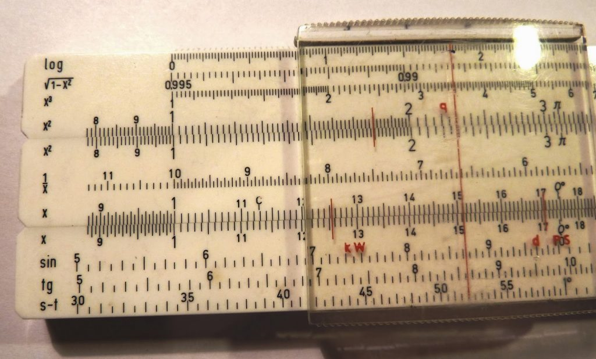
Аналоговое устройство для вычислений — логарифмическая линейка
 Арифмометр «Феликс»
Арифмометр «Феликс»
The Z1 was a motor-driven mechanical computer designed by Konrad Zuse from 1936 to 1937, which he built in his parents' home from 1936 to 1938. It was a binary electrically driven mechanical calculator with limited programmability, reading instructions from punched celluloid film.

Цифровой двоичный программируемый механический вычислитель Z1 (модель)
ENIAC (/ˈɛniæk/; Electronic Numerical Integrator and Computer) was the first programmable, electronic, general-purpose digital computer, completed in 1945. Although ENIAC was designed and primarily used to calculate artillery firing tables for the United States Army's Ballistic Research Laboratory, its first program was a study of the feasibility of the thermonuclear weapon.
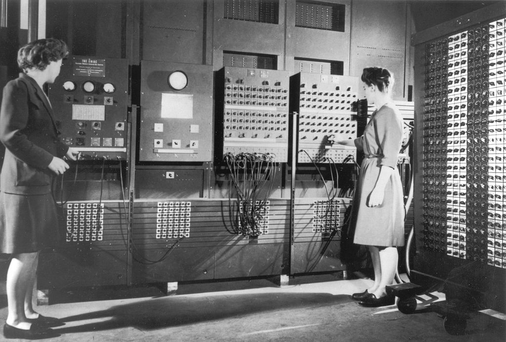
Бетти Джин Дженнигс и Рут Байлас программируют электронный компьютер ENIAC

Квантовый компьютер IBM Q
Про что мы говорить будем: архитектура фон Неймана
https://skillbox.ru/media/code/printsipy-fon-neymana-i-pervye-kompyutery-na-ikh-osnove/

Фон-Неймановский компьютер:
- электронный, цифровой;
- адресуемая память — набор одинаковых пронумерованных ячеек;
- хранимая программа в виде набора инструкций;
- инструкции исполняются по одной, в определённой последовательности; есть IP — instruction pointer, ячейка памяти внутри control unit, где хранится адрес текущей инструкции;
- инструкции и данные хранятся в одной и той же памяти, инструкции можно обрабатывать как данные.
Von Neumann bottleneck: одна и та же шина памяти используется для передачи инструкций и данных.
Типичный шаг исполнения программы:
- fetch — из памяти приносим следующую инструкцию;
- decode — определяем, как она будет исполняться;
- execute — исполнение:
- производим вычисления и обновляем операнды;
- обновляем instruction pointer.
┌───────────────┐
│ │
│ │ ┌─────────────┐
...│ │ │ IP │
├───────────────┤ │ │
247│ add x, 1 │◄──────┐ │ │
├───────────────┤ └─────┤ 247 │
248│ jmp 247 │ └─────────────┘
├───────────────┤
249│ │
├───────────────┤
250│ │
├───────────────┤
...│ │
│ │
│ │
│ │
└───────────────┘
ISA (instruction set architecture) — набор инструкций конкретного компьютера, их семантика и способ кодирования в памяти. Примеры ISA: x86, ARM, MIPS, RISC-V.
Компьютеры с одинаковой ISA могут быть по-разному устроены на уровне микроархитектуры — от этого может зависеть скорость или эффективность исполнения программ.
См. также: гарвардская архитектура (инструкции и данные отдельно): https://en.wikipedia.org/wiki/Harvard_architecture
Целые числа
Двоичное представление:
\( 42 = 32 + 8 + 2 = 2^5 + 2^3 + 2^1 = 101010_2 \).
\( 49 = 32 + 16 + 1 = 2^5 + 2^4 + 2^0 = 110001_2 \).
Нумерация битов:
... 0 0 1 1 0 0 0 1 = 49
... 7 6 5 4 3 2 1 0
<- старшие разряды
младшие разряды ->
Ячейки памяти разного размера:
8 бит:
00000000 = 0
11111111 = 255
16 бит:
0000000000000000 = 0
1111111111111111 = 65535
...
Шестнадцатеричные цифры:
0000 0 1000 8
0001 1 1001 9
0010 2 1010 a
0011 3 1011 b
0100 4 1100 c
0101 5 1101 d
0110 6 1110 e
0111 7 1111 f
Например, 42 = 0b00101010 = 0x2A. Полезно помнить некоторые степени двойки:
2**8 = 256 = 0x100
2**10 = 1024 = 0x400
2**12 = 4096 = 0x1000
2**16 = 65536 = 0x10000
Переполнение 16-битной ячейки памяти:
0xffff = 65535
+ 0x0001
= 0x0000
(должно было быть 0x10000, но старший бит не поместился)
Получается арифметика по модулю \( 2^N \), в данном случае — по модулю \( 2^{16} = 65536 \).
Знаковые числа
Two's complement representation (два-дополнительный код) на примере 4-разрядных (4-битных) чисел:
| Биты | Число |
|---|---|
| 0000 | 0 |
| 0001 | 1 |
| 0010 | 2 |
| 0011 | 3 |
| 0100 | 4 |
| 0101 | 5 |
| 0110 | 6 |
| 0111 | 7 |
| 1000 | -8 |
| 1001 | -7 |
| 1010 | -6 |
| 1011 | -5 |
| 1100 | -4 |
| 1101 | -3 |
| 1110 | -2 |
| 1111 | -1 |
Старший бит — знаковый.
\(-x = \bar x + 1\) (побитовая инверсия и сложение), например, \(-0001 = \overline{0001} + 1 = 1110 + 1 = 1111\).
«Переполнение» беззнаковых чисел здесь работает вполне логично:
0xffff = -1
+ 0x0001
= 0x0000
Могут быть и другие, реже используемые,
представления знаковых чисел,
например sign-magnitude: бит знака, а в остальных битах
модуль числа. (В таком представлении есть отдельно +0 и -0.)
Язык ассемблера
Наш подопытный кролик — x86
Компьютер IBM PC, выпущенный в 1981 году, оснащался процессором Intel 8088, а более поздние модели — процессорами 80286, 80386 и 80486.
Машинный код и язык ассемблера
Читать инструкции процессора в виде чисел очень неудобно (а писать тем более):
2c93: 48 8d 91 00 00 fe ff
2c9a: 48 39 c2
2c9d: b8 00 00 02 00
2ca2: 48 0f 46 c1
Поэтому для инструкций придумывают названия (мнемоники) и правила записи их операндов, а потом делают конвертор из такого текстового представления в двоичное (машинный код). Такой конвертор называется ассемблером, а текстовое представление инструкций — языком ассемблера.
lea -0x20000(%rcx),%rdx
cmp %rax,%rdx
mov $0x20000,%eax
cmovbe %rcx,%rax
В мире x86 исторически больше всего используются два синтаксиса языка ассемблера: AT&T vs Intel. Эти же инструкции в синтаксисе Intel выглядят так:
lea rdx, [rcx - 0x20000]
cmp rdx, rax
mov eax, 0x20000
cmovbe rax, rcx
Можно заметить, что мнемоники инструкций в основном те же, но операнды записываются иначе и идут в другом порядке.
Мы будем использовать синтаксис AT&T, потому что в среде GNU он используется по умолчанию.
Регистры
«Переменные» внутри процессора.
von Neumann closer to reality
┌────────────────┐ ┌────────────────┐
│ CPU │ │ CPU │
│ │ │ │
│ ┌────────────┐ │ │ │
│ │Control unit│ │ │ Registers │
│ │ │ │ │ │
│ │IP │ │ │ (including IP) │
│ └────────────┘ │ │ │
│ │ │ │
└────────┬───────┘ └────────┬───────┘
│ │
│ │
┌────────┴───────┐ ┌────────┴───────┐
│ Memory │ │ Cache(s) │
│ │ │ │
│ │ │ │
│ │ └────────┬───────┘
│ │ │
│ │ ┌────────┴───────┐
│ │ │ RAM │
│ │ │ │
│ │ │ │
└────────────────┘ └────────────────┘
Instruction pointer (program counter): eip.
Регистры общего назначения (general purpose registers):
| Регистр | Младшие 16 бит | Два младших байта |
|---|---|---|
eax | ax | ah, al |
ebx | bx | bh, bl |
ecx | cx | ch, cl |
edx | dx | dh, dl |
esi | si | — |
edi | di | — |
ebp | bp | — |
(Есть ещё регистр esp, который мы пока не трогаем.)
Первые инструкции
Инструкция выглядит примерно так: мнемоника операнд, операнд.
Операнд-регистр записывается после знака процента: %eax.
Наша первая мнемоника: mov.
mov SRC, DST // копировать SRC в DST
movl %eax, %ebx // скопировать биты eax в ebx
// старое значение ebx теряется
movw %ax, %bx
movb %ah, %bl
Суффиксы размера операндов:
b(byte) — 8 битw(word) — 16 битl(long) — 32 битаq(quad) — 64 бита (не используем)
Справочник (в синтаксисе Intel)
Непосредственно заданный операнд:
movl $42, %ecx // положить в %ecx битовое представление числа 42
movl $0x80, %edx // шестнадцатеричная запись операнда
movl $-1, %eax // установить все биты eax в 1
Библиотека simpleio
call writei32 // напечатать на экране значение eax
// как знаковое десятичное число
call readi32 // ввести с клавиатуры число и сохранить в eax
call readi64 // ввести с клавиатуры число и сохранить в edx:eax
call writei64 // вывести edx:eax
call finish // завершить исполнение программы
Наша первая программа на языке ассемблера x86, вычисляющая сумму двух чисел:
.global main
main:
call readi32 // считали первое число
movl %eax, %ecx // сохранили его в ecx
call readi32 // считали второе число в eax
addl %ecx, %eax // сложили первое и второе
call writei32 // вывели результат
call finish // завершили программу
Сохраним её в файл sum.S (да, заглавная S), оттранслируем и запустим:
$ gcc -m32 -g sum.S simpleio_i686.S -o sum
$ ./sum
Некоторые арифметические инструкции
add SRC, DST // DST += SRC
sub SRC, DST // DST -= SRC
inc DST // DST++
dec DST // DST--
neg DST // DST = -DST
not DST // DST = ~DST
and SRC, DST // DST &= SRC
or SRC, DST // DST |= SRC
xor SRC, DST // DST ^= SRC
Инструкции сдвига
Логический сдвиг: двигаем биты внутри регистра, дополняя его нулями и теряя то, что «выпало».
movw $0x1234, %ax
shrw $4, %ax // ax == 0x0123
shlw $4, %ax // ax == 0x1230
addw $7, %ax // ax == 0x1237
rorw $4, %ax // ax == 0x7123
Арифметический сдвиг вправо: двигаем биты, дополняя слева знаковым битом
movw 0xfff0, %ax // ax == -16
sarw $4, %ax // ax == 0xffff == -1
salw $5, %ax // ax == 0xfff0 == -16
См. также справочник.
Директивы ассемблера
.global main // экспортировать символ main
main:
movl $42, %eax
.intel_syntax noprefix
mov eax, 42 // код в синтаксисе Intel
.att_syntax noprefix
movl $42, eax // noprefix — без символа %
// перед операндами-регистрами
.att_syntax prefix
.set answer, 4 * 10
movl $answer + 2, %eax
nop
.byte 0x90
.skip 5, 0x90
call finish
.word 1, 2, 3 // или .short 1, 2, 3
.int 4, 5, 6
.quad 7, 8, 9
Переходы и метки
.global main
main:
xor %eax, %eax
xor %ebx, %ebx
loop:
inc %eax
inc %ebx
jmp loop
Флаги
Большинство арифметических инструкций в результате вычисления результата инструкции устанавливают арифметические флаги слова состояния процесса.
Флаг ZF (zero) устанавливается, если в результате операции был получен нуль.
Флаг SF (sign) устанавливается, если в результате операции было получено отрицательное число.
Флаг CF (carry) устанавливается, если в результате выполнения операции произошел перенос из старшего бита результата. Например, для сложения CF устанавливается если результат сложения двух беззнаковых чисел не может быть представлен 32-битным беззнаковым числом.
Флаг OF (overflow) устанавливается, если в результате выполняния операции произошло переполнение знакового результата. Например, при сложении OF устанавливается, если результат сложения двух знаковых чисел не может быть представлен 32-битным знаковым числом.
Обратите внимание, что и сложение addl, и вычитание subl устанавливают одновременно и флаг CF, и флаг OF. Сложение и вычитание знаковых и беззнаковых чисел выполняется совершенно одинаково, и поэтому используется одна инструкция и для знаковой, и для беззнаковой операции.
stc // установить CF
clc // сбросить CF
setc %al // установить %al в 0 или 1 в зависимости от флага
// seto, setz, ...
Условные переходы
jz label /* переход, если равно (нуль), ZF == 1 */
jnz label /* переход, если не равно (не нуль), ZF == 0 */
jc label /* переход, если CF == 1 */
jnc label /* переход, если CF == 0 */
jo label /* переход, если OF == 1 */
jno label /* переход, если OF == 0 */
jg label /* переход, если больше для знаковых чисел */
jge label /* переход, если >= для знаковых чисел */
jl label /* переход, если < для знаковых чисел */
jle label /* переход, если <= для знаковых чисел */
ja label /* переход, если > для беззнаковых чисел */
jae label /* переход, если >= (беззнаковый) */
jb label /* переход, если < (беззнаковый) */
jbe label /* переход, если <= (беззнаковый) */
Посчитаем до 20:
main:
xor %eax, %eax
loop:
add $3, %eax
call writei32
mov %eax, %ecx
subl $20, %ecx
jl loop
// тут чего-то не хватает
.globl main
cmp src, dst // недеструктивная версия sub
test src, dst // недеструктивная версия and
Длинная арифметика
Сложим 64-разрядные числа в edx:eax и edi:esi:
add %esi, %eax // сложили младшие половины
jnc 1f
inc %edx // если был перенос, добавляем 1
1:
add %edi, %edx // сложили старшие половины
Чтобы не выписывать такую последовательность инструкций, есть инструкция adc (add with carry),
которая прибавляет ко второму операнду не только первый операнд, но и значение
флага CF:
add %esi, %eax
adc %edi, %edx
Аналог для вычитания — sbb (subtract with borrow).
Условные инструкции
Инструкция cmovz (conditional move if ZF) работает как mov,
если ZF выставлен, или как nop, если сброшен. Аналогично
с другими условиями.
nand2cpu
Архитектура фон Неймана:
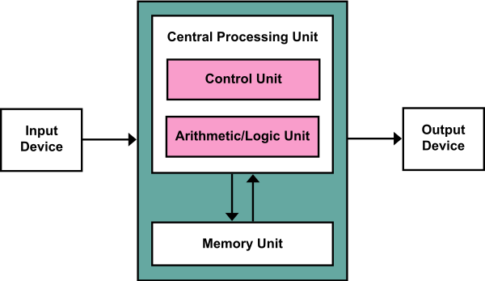
Наша задача: сделать процессор (CPU) — цифровое электронное устройство, способное последовательно выполнять инструкции, хранящиеся в памяти (в том числе: доставать из памяти сами инструкции и данные, обрабатывать данные и записывать их обратно в память, а также взаимодействовать с «внешними устройствами»).
Под «обработкой данных» мы обычно понимаем вычисление каких-нибудь функций (в математическом смысле): например, у нас есть два числа \(x\) и \(y\), а мы хотим вычислить их сумму \(x+y\). Компьютер у нас двоичный, так что целые числа мы представляем в двоичной форме — в виде последовательности нулей и единиц: \( 14 = 1110_2 \), а вычисления можно представить в виде логических операций.
План действий:
-
научиться представлять любые функции в виде логических схем;
-
научиться последовательно производить вычисления согласно программе (последовательности инструкций);
-
воплотить всё это в виде электронного устройства.
Логические схемы
Будем собирать схемы из ограниченного количества логических элементов, или логических вентилей (logic gates) — можно выбрать, например, такой базис:
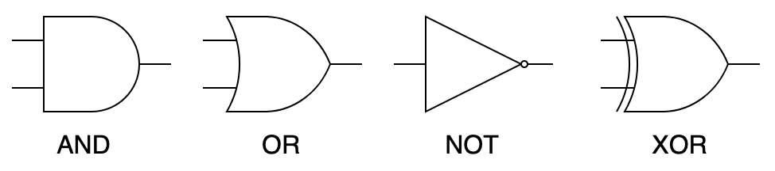
Сделаем двухразрядный сумматор — функцию, которая принимает два одноразрядных числа и возвращает двухразрядное число — их сумму. Напишем сначала таблицу истинности:
| x | y | x+y |
|---|---|---|
| 0 | 0 | 00 |
| 0 | 1 | 01 |
| 1 | 0 | 01 |
| 1 | 1 | 10 |
Первый (старший) бит — это AND(x, y), а второй (младший) — это XOR(x, y). Так и нарисуем:
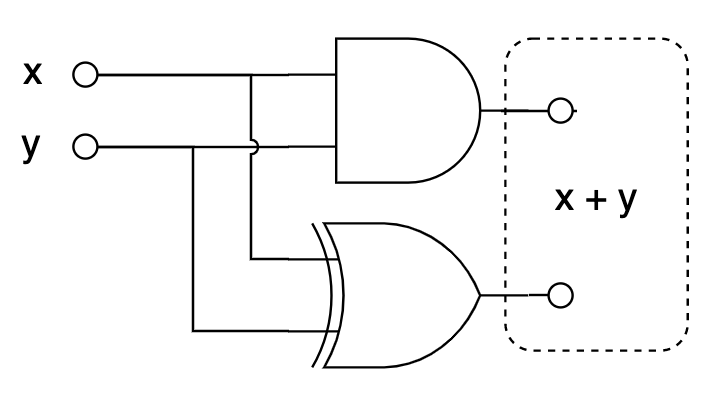
Теперь усилим эффект и будем складывать два двухразрядных числа:
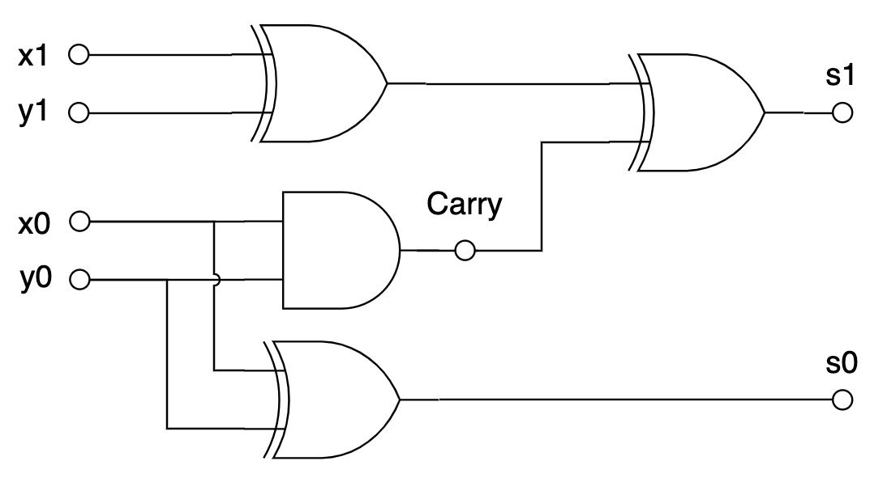
И так далее. В общем, потратив больше или меньше базисных элементов, можно реализовать любую булеву функцию. Можно, например, сделать арифметико-логическое устройство (АЛУ), которое принимает на вход два числа и номер операции (1 — сложение, 2 —вычитание, 3 — умножение…) и выдаёт на выходе результат.
Конечно, любая физическая реализация такой комбинационной логики будет
срабатывать не мгновенно, а с некоторой задержкой. Можно представить себе, как
входной сигнал «протекает» через логические вентили: например, если у каждого
вентиля задержка \(d\), то в предыдущей схеме s0 будет вычислено с задержкой
\(d\), а s1 с задержкой \(2d\).
Синхронизация
Очень неудобно, когда разряды числа оказываются вычислены в разные моменты времени. Хотелось бы научиться в некоторых точках схемы остановиться и подождать, пока какие-то значения не стабилизируются (например, дождать вычисления всех разрядов числа).
Чтобы подождать, нам потребуется некоторое время «помнить» значения в нужных точках схемы. Чтобы добиться такого эффекта, мы выйдем за пределы комбинационной логики (в которой сигнал течёт только «вперёд») и добавим в схему цикл.

Триггер (SR latch)
Буквы S и R означают Set и Reset. Если подать на входы S=1, R=0, то триггер «запоминает» значение 1; если S=0, R=1, то значение 0; пока S=R=0, триггер находится в самоподдерживающемся состоянии — выход равен «запомненному» значению.
Теперь, чтобы «запереть» триггер, добавим перед ним штуковину, которая может обратить оба входа в ноль:

Синхронный триггер (gated SR latch)
Пока E=0, триггер не изменит своего состояния Q. Осталось от пары сигналов S/R перейти к одному сигналу data — D:

Синхронный D-триггер (synchronous D-latch)
Приделаем такие D-триггеры к нашему сумматору, а на входы E подадим сигнал от тактового генератора, который с некоторой периодичностью на короткое время подаёт туда 1:
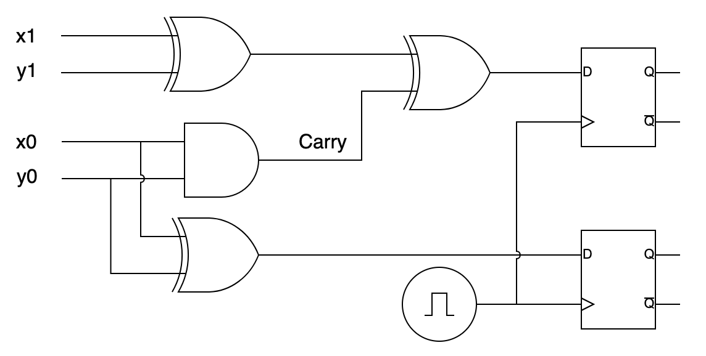
Сумматор с защёлкой на выходе
Пока тактовый генератор не подал единицу на входы Е, защёлки хранят своё предыдущее состояние (и обеспечивают стабильный вход для последующих комбинационных цепей). Как только он сработает, значения на защёлках сменятся на вновь вычисленные.
Таким образом, вставляя между защёлками комбинационную логику, мы можем сделать синхронную цепь, в которой в течение такта обновляются значения, которые хранятся на защёлках. Тактовая частота должна быть достаточно низкой, чтобы успела стабилизироваться комбинационная логика, но как можно более высокой, чтобы считать побыстрее :-).
Реализация
https://habr.com/ru/company/timeweb/blog/653159/
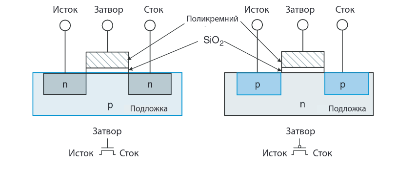


Обращения к памяти
Сохранить значение регистра eax по адресу 0x40100, а потом загрузить обратно в регистр ebx:
mov %eax, 0x40100
mov 0x40100, %ebx
(При этом мы используем 4 байта по адресам 0x40100, 0x40101, 0x40102, 0x40103.)
Положить в память по адресу 0x40100 целое число 0x1543:
movl $0x1543, 0x40100
Как правило, мы используем в качестве адресов метки:
.global main
main:
mov x, %eax
call writei32
call finish
x: .int 43
Не любой адрес в памяти доступен для чтения и тем более записи:
.global main
main:
incl x
call finish
x: .int 43
При попытке исполнения инструкции incl операционная система
остановит программу с сообщением «Segmentation fault»,
поскольку эти данные нельзя менять.
Секции .data и .bss
Любые байты, порождаемые ассемблером,
записываются в одну из секций исполняемого
файла. По умолчанию это секция .text, в которой
ожидается машинный код и которая недоступна для записи.
Данные можно положить в секцию .data:
incl x
.data
x: .int 43
.text
call finish
Обратите внимание, что ассемблер собирает вместе содержимое каждой
из секций: в примере выше инструкция call окажется в памяти
(и в исполняемом файле)
сразу после incl.
Есть также секция .bss, в которую можно положить только нулевые байты:
.bss
z: .int 0
.int 0
// .int 83 // would be an error
Typical memory layout:
┌──────────────────┐ Executable file
0x0000_0000│//////////////////│ ┌───────────────┐
│//////////////////│ │ headers │
├──────────────────┤ ├───────────────┤
│.text (read and │ │.text │
│ execute) │ │ │
eip─►│ │ │ │
│ │ │ │
│ │ │ │
├──────────────────┤ ├───────────────┤
│.data (read and │ │.data │
│ write) │ │ │
├──────────────────┤ └───────────────┘
│.bss (read and │
│ write) │
│ │
├──────────────────┤
│//////////////////│
│//////////////////│ /// = unmapped region
│//////////////////│ (inaccessible memory)
│//////////////////│
│//////////////////│
│//////////////////│
esp─►│stack │
│ │
│ │
│ │
│ │
├──────────────────┤
│//////////////////│
0xffff_ffff│//////////////////│
└──────────────────┘
Бывают read-only данные (например, тексты сообщений программы),
для них есть секция .rodata. Эта секция не имеет собственной
директивы, поэтому нужно воспользоваться директивой .section:
.section .rodata
pi_digits:
.byte 3,1,4,1,5,9,2,6
(На практике вместо .rodata константные данные часто кладут в .text.)
Endianness
x86 — little endian:
// 0x40100: 00 00 00 00 00 00 00 00
movl $0xabcdef, 0x40100
// 0x40100: ef cd ab 00 00 00 00 00
Младший байт по младшему адресу в памяти.
Расширение
movzbl %al, %edi // zero-extend, расширение нулями
movsbl %al, %edi // sign-extend, расширение знаковым битом
cdq // sign-extend eax to edx:eax
В синтаксисе Intel — movzx, movsx.
Разные способы адресации в x86
mov x + 4, %eax // прямая адресация
mov $x, %esi // (положили в esi адрес массива x)
mov 4(%esi), %eax // косвенная адресация
mov $17, %edi
// загружаем в eax 18-й элемент массива
// (адрес которого %esi + %edi*4)
mov (%esi, %edi, 4), %eax
// делаем то же самое
mov x(, %edi, 4), %eax
// и ещё раз
mov x + 17 * 4, %eax
.bss
x: .skip 4 * 100
x5: .int x + 4*5 // в x5 лежит адрес шестого элемента массива x
Общий вид обращения к памяти:
OFFSET(BREG, IREG, SCALE)
Здесь OFFSET — непосредственно заданное смещение, BREG — базовый регистр, IREG — индексный регистр, умножаемый на SCALE (SCALE может быть 1, 2, 4 или 8).
Итоговый адрес (effective address) вычисляется по формуле:
BREG + OFFSET + IREG * SCALE
Стек
Writable область памяти, которая используется как стек :-). Стек на x86 растёт вниз (от старших адресов к младшим). На верхушку стека (первый занятый байт) указывает регистр esp.
Скопировать верхушку стека (первые 4 байта) в регистр eax:
mov (%esp), %eax
Для того, чтобы класть данные на стек и выталкивать их оттуда, есть специальные инструкции:
push %eax // то же, что sub $4, %esp; mov %eax, (%esp)
pop %eax // то же, что mov (%esp), %eax; add $4, %esp
Инструкция push одна из немногих, которые могут обратиться
к двум адресам памяти сразу:
.data
x: .int 1900
.text
pushl x // взять 4 байта из памяти по адресу x
// и положить их в стек, то есть тоже в память
Можно пользоваться памятью выше esp, если вы знаете,
что там что-то есть. Например, если вы положили в стек
два 32-битных числа, их можно оттуда читать и там изменять:
pushl $6
pushl $7
// теперь стек выглядит так:
// 07 00 00 00 06 00 00 00 ...
// ↑ esp
mov 4(%esp), %eax // загрузили в %eax число 6
incl (%esp) // теперь на верхушке стека лежит число 8
Память ниже esp использовать не следует.
Инструкция push %esp кладёт на стек
то значение esp, которое было до её исполнения
(не уменьшенное на 4).
Подпрограммы
Когда в ДЗ просят сдать «функцию» или «подпрограмму»:
- исполнение начинается с метки с именем подпрограммы;
- метка должна быть
.global; - чтобы вернуть управление в проверяющую программу,
используйте инструкцию
ret; - если меняете значения регистров, кроме
eax,ecxиedx, сохраняйте их в стек и потом восстанавливайте.
Например, если вас просят написать функцию foobar,
и вам нужно менять регистры esi и edi:
.global foobar
foobar:
push %esi
push %edi
... // делаем что просят, можем портить esi и edi
pop %edi // восстанавливаем в обратном порядке
pop %esi
ret
(Подробнее в следующей лекции.)
Устройство ОЗУ
Мы уже видели SRAM — память на триггерах.
Основную часть памяти компьютера составляет DRAM:

Процессор и память общаются посредством шины (bus):

lea
Load effective address — не обращается к памяти, а загружает в регистр вычисленный адрес:
lea 4(%esi, %edi, 8), %eax // теперь eax = esi + 8*edi + 4
lea (%eax, %eax, 8), %eax // умножили eax на 9 🤡
Переход по адресу в регистре
jmp *%eax
Например:
somelabel:
...
...
mov $somelabel, %eax
jmp *%eax
Или так:
func1:
...
func2:
...
.section .rodata
functable:
.int func1
.int func2
.text
...
mov functable + 4, %eax
jmp *%eax
Выравнивание

Как правило, лучше, чтобы многобайтовые обращения к памяти были выровнены (aligned).
// начало секции
.byte 1
.int 1 // эти 4 байта лежат по адресу, не кратному 4
.balign 4 // byte align: здесь добавит 3 байта нулей
.int 1 // эти 4 байта лежат по адресу, кратному 4
.balign 2 // не добавит ничего
.short 1
Подпрограммы
Мы хотим переиспользовать код — вызывать одну и ту же последовательность инструкций из разных точек программы.
double_eax:
sal $1, %eax
jmp ... // куда?
...
jmp double_eax
// хотим продолжить исполнение здесь
...
jmp double_eax
// или здесь
Некоторые архитектуры решают это с помощью специального регистра для адреса возврата. Если бы такой был в x86, подпрограммы могли бы выглядеть так:
double_eax:
sal $1, %eax
jmp *%return_address
...
mov $1f, %return_address
jmp double_eax
1:
...
mov $1f, %return_address
jmp double_eax
1:
Но в x86 принято адрес возврата класть на стек:
double_eax:
sal $1, %eax
pop %edx // достаём из стека адрес возврата
jmp *%edx // и переходим по нему
...
push $1f // кладём в стек адрес возврата
// (адрес следующей инструкции после jmp)
jmp double_eax // и переходим на начало подпрограммы
1:
...
push $1f
jmp double_eax
1:
Для этих операций (вход в подпрограмму и возвращение из неё)
есть специальные инструкции call и ret:
double_eax:
sal $1, %eax
ret // достаём из стека адрес возврата
// и переходим по нему
...
call double_eax // кладём в стек адрес возврата
// (адрес следующей инструкции после call)
// и переходим на начало подпрограммы
...
call double_eax
В подпрограмме важно соблюдать баланс инструкций
push и pop, чтобы не промахнуться мимо адреса возврата.
Соглашения о вызовах
Чтобы разные люди (и компиляторы) могли совместно разрабатывать подпрограммы, им нужно договориться, как передавать в подпрограмму параметры, как возвращать результат и какие регистры подпрограмма не будет портить. Такие договорённости называются соглашениями о вызовах (calling conventions).
Стандартное соглашение на нашей платформе (Linux/x86) называется cdecl:
- параметры передаются в стеке, причём лежат в памяти «по порядку» (адрес увеличивается вместе с номером аргумента);
- параметры удаляет из стека тот, кто их туда положил (то есть вызывающая функция);
- возвращаемое значение в регистре eax
(а 64-битное — в паре
eax:edx); - caller-saved регистры: eax, ecx и edx;
- callee-saved регистры: все остальные.
Вооружённые этим знанием, мы теперь можем вызывать функции на Си и быть ими вызваны:
// int foobar(int a, int b)
pushl b
pushl a
call foobar
add $8, %esp
// возвращённое значение лежит в %eax
// возможная реализация функции foobar
.global foobar
foobar:
// сейчас стек выглядит так: ra a b
mov 4(%esp), %eax
add 8(%esp), %eax
ret
Локальные переменные
Под них мы выделяем место на стеке:
baz:
sub $8, %esp // выделили себе 8 байт, в которых неизвестно что
push $0 // выделили себе 4 байта, в которых 0
// сейчас стек выглядит так: 0 ? ? ra arg1 arg2...
Чтобы обращаться к аргументами функции через esp, придётся помнить, на сколько мы этот esp сместили:
mov 16(%esp), %eax // достали первый аргумент
Стековый кадр
Принято при входе в функцию сохранять esp в регистре ebp (base pointer), а сам ebp соответственно в стеке:
quux:
push %ebp
mov %esp, %ebp
/*
stack layout: oldebp ra arg1 arg2...
↑ ebp
arg1: 8(%ebp)
arg2: 12(%ebp)...
local var 1: -4(%ebp)
local var 2: -8(%ebp)...
*/
...
mov %ebp, %esp
pop %ebp
ret
Стековый кадр (stack frame):
│ ... │
├───────────────┤
│ saved ebp │ ◄─┐
│ │ │
│ │ │
│ │ │
│ arg2 │ │
│ arg1 │ │
│ return addr │ │
├───────────────┤ │
ebp→│ saved ebp │ ──┘
│ local1 │
esp→│ local2 │
│ │
Текст (не тот, который .text, а настоящий)
Кодировка ASCII.
greeting:
.byte 'H' // то же, что .byte 0x48
.byte 'i' // то же, что .byte 0x69
.byte ' '
.ascii "guy"
.asciz "s" // то же, что .ascii "s\0"
.asciz "Hi guys" // ещё раз та же последовательность байт
Многофайловая сборка
preprocess compile assemble │
.c ──────────────► .i ──────────► .s ──────────► .o │
├──────► Executable
preprocess assemble │ link
.S ──────────────► .s ──────────► .o │
│
Опции gcc:
-E stop after preprocessing
-S stop after compiling to assembly
-c stop after assembling the object file
Формат ELF
Рассмотрим простую программу:
// print42.S
.global main
main:
mov wrong, %eax
mov answer, %eax
call writei32
call finish
.data
wrong:
.int 41
answer:
.int 42
$ gcc -m32 -c print42.S -o print42.o
$ gcc -m32 print42.o simpleio_i686.S -o print42
$ nm print42.o
00000004 d answer
U finish
00000000 T main
U writei32
00000000 d wrong
$ objdump -d print42
...
080497a5 <main>:
80497a5: a1 68 c0 10 08 mov 0x810c068,%eax
80497aa: a1 6c c0 10 08 mov 0x810c06c,%eax
80497af: e8 5c 00 00 00 call 8049810 <writei32>
80497b4: e8 b7 00 00 00 call 8049870 <finish>
...
$ objdump -dr print42.o
00000000 <main>:
0: a1 00 00 00 00 mov 0x0,%eax
1: R_386_32 .data
5: a1 04 00 00 00 mov 0x4,%eax
6: R_386_32 .data
a: e8 fc ff ff ff call b <main+0xb>
b: R_386_PC32 writei32
f: e8 fc ff ff ff call 10 <main+0x10>
10: R_386_PC32 finish
Как работает CPU
Class RISC pipeline
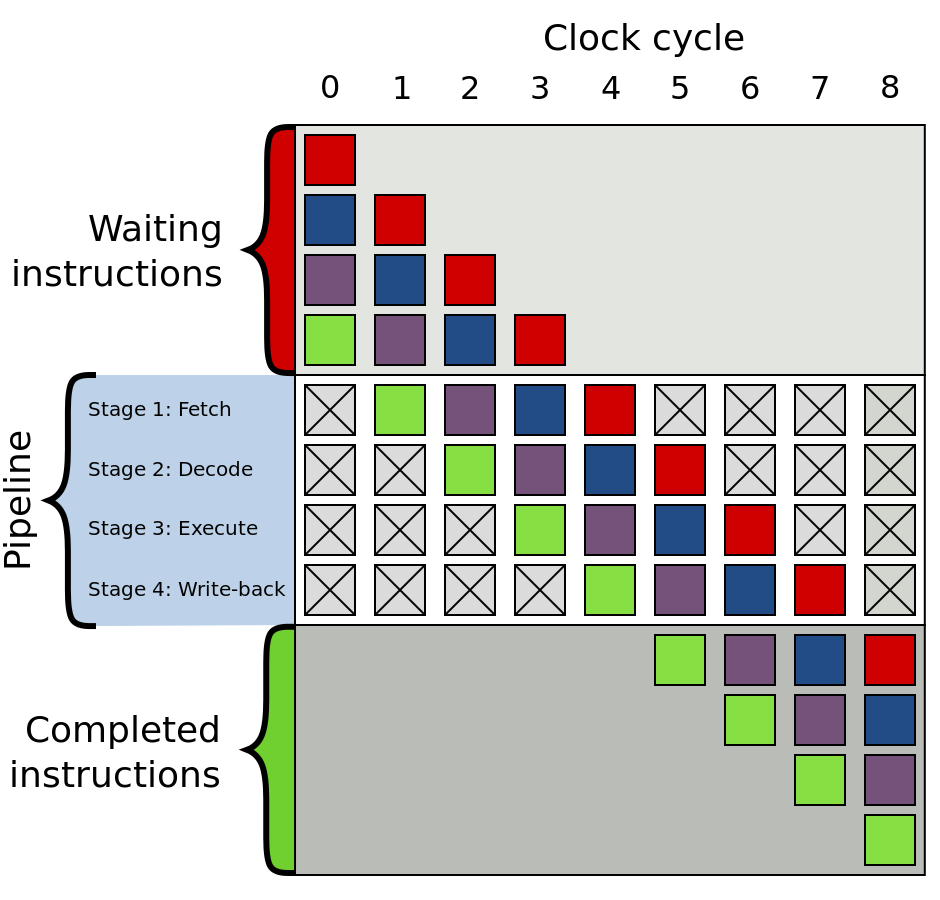
Real life
Out-of-order execution
µops
// ISA instructions → µops (names made up)
add %eax, x → µload x, %tmp1
µadd %eax, %tmp1
µstore %tmp1, x
mov mem1, %eax
imul $5, %eax
add mem2, %eax // fetch started before imul
mov %eax, mem3
Register renaming
Every time an instruction writes to or modifies a logical register, the microprocessor assigns a new temporary register to that logical register.
movl mem1, %eax
imull $6, %eax
movl %eax, mem2
movl mem3, %eax // old value of eax dropped
addl $2, %eax
movl %eax, mem4 // eax retirement
Branch prediction (предсказание переходов)
Predict whether branch is T (taken) or NT (not taken).
Loop vs conditional
Stupid approach:
loop:
...
jz loop // T
...
jz else // NT
...
else:
Predict taken backwards, not taken forwards.
Saturating counter
Store state for every branch: T ↔ Weak T ↔ Weak NT ↔ NT
Return prediction
A Last-In-First-Out buffer, called the return stack buffer, remembers the return address every time a call instruction is executed, and it uses this for predicting where the corresponding return will go. This mechanism makes sure that return instructions are correctly predicted when the same subroutine is called from several different locations.
See PDF for better methods.
Pipeline (конвейер)
General idea: different stages of execution require different hardware, so we can parallelize them.
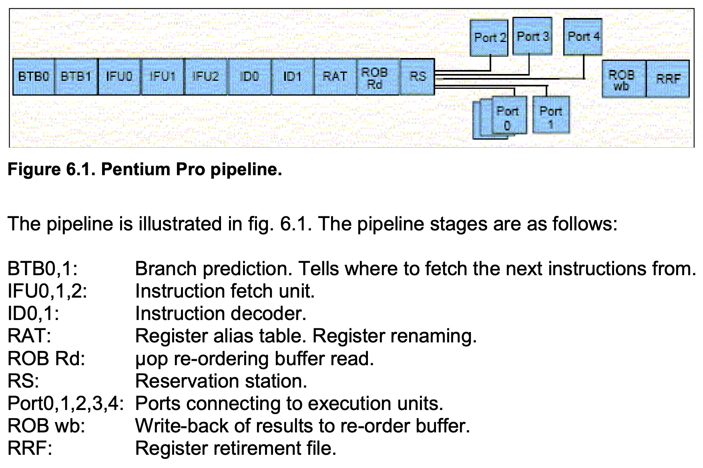
Keywords:
- µop cache
- execution unit
- micro-op fusion (e.g. memory write: address calculation + data transfer)
- macro-op fusion (e.g. cmp + jz)
- stack engine (special handling of esp/rsp)
µop stages:
- queued in ROB (reorder buffer)
- executing
- retirement (register writeback etc.)
Язык Си
История
 Кен Томпсон и Деннис Ричи у PDP-11
Кен Томпсон и Деннис Ричи у PDP-11
Википедия про историю языка Си
Мы используем стандарт С17 (прошлые стандарты: C89, C99, C11; грядёт стандарт C23).
Черновик стандарта (сам стандарт можно купить у ISO за большие деньги, там написано то же самое.)
Что регулирует стандарт
- Implementation-defined behavior
- Пример: представление целых чисел (two's complement, sign-magnitude)
- Unspecified behavior
- Пример: порядок вычисления аргументов при вызове функции (
f(g(), h()))
- Пример: порядок вычисления аргументов при вызове функции (
- Undefined behavior (UB)
- Пример: выход за границы массива
Статья про то, зачем нам нужен UB
*p = 1;
if (!p) {
fprintf(stderr, “NULL pointer\n”);
return;
}
Целые типы
char signed char unsigned char
short = signed short unsigned short
int = signed int unsigned int
long = signed char unsigned char
long long = signed long long unsigned long long
- CHAR_BIT >= 8
- sizeof(char)== 1
- sizeof(signed T) == sizeof(unsigned T) == sizeof(T)
- short как минимум 16 бит
- int как минимум 16 бит
- long как минимум 32 бита
- long long как минимум 64 бита
sizeof для типов:
Тип Atmel AVR 32-bit Win64 64-bit
char 1 1 1 1
short 2 2 2 2
int 2 4 4 4
long 4 4 4 8
long long - 8 8 8
__int128 - - - 16
#include <limits.h>
CHAR_MIN, CHAR_MAX, SCHAR_MIN, SCHAR_MAX,
UCHAR_MIN, ..., INT_MIN, INT_MAX, UINT_MAX,
LONG_MIN, LONG_MAX, ULONG_MAX, LLONG_MIN,
LLONG_MAX, ULLONG_MAX
Заголовочный файл <stdint.h>:
- Знаковые типы:
int8_t, int16_t, int32_t, int64_t - Беззнаковые типы:
uint8_t, uint16_t, uint32_t, uint64_t - Типы размера, достаточного для хранения
адреса в памяти:
intptr_t, uintptr_t int8_min_t(минимум 8 бит, но может быть больше, если платформой не поддерживается вариант с 8 битами),int8_fast_t(минимум 8 бит, но больше, если вычисления так производить быстрее)
Литералы:
0 // int
0U // unsigned
0UL // unsigned long
0LL // long long
Знаковая и беззнаковая арифметика
Unsigned – арифметика по модулю \(2^N\).
Signed – операции с неправильным результатом, как правило, UB.
UINT_MAX + 1; // OK, always 0
INT_MAX + 1; // UB
int i;
i < i + 1; // the compiler may assume this is always true
Опции gcc:
-ftrapv– abort() при знаковом целочисленном переполнении-fwrapv– выполнять знаковые операции по модулю 2^N, но компилятор не делает никаких оптимизационных предположений-fsanitize=undefined– частичная проверка на undefined behavior при работе программы
Для обнаружения переполнения в знаковой арифметике можем воспользоваться GCC built-in overflow detection
Implicit conversions
Integer promotion: числа короче, чем int (то есть char, short) при использовании их в выражениях превратятся в int или unsigned int
cppreference on implicit conversions
Hello World
#include <stdio.h>
#define GREETING "Hello, world!\n"
// макрос будет раскрыт в ходе препроцессирования
int main(void) {
printf("Hello, world!\n");
return 0;
}
int main(){} //объявление функции с неизвестными параметрами
// запуск
gcc hello.c -o hello
./hello
gcc -c hello.c - делает объектный файл
gcc -S hello.c - делает ассемблерный файл
gcc -E hello.c - остановка на стадии препроцессирования
gcc -Wall -Werror // show all warnings, warnings will be treated as errors
Исполнение начинается с нахождения функции main: если она не нашлась - ошибка компоновки. Main - единственная функция, которая может ничего не возвращать, и это не приведет к UB. В таком случае будет считаться, что main возвращает 0
#include <stdio.h>
#define GREETING "Hello, world\n"
int foobar() {}
int main(void) {
printf(GREETING);
int x = foobar(); // UB
return 0;
}
Классы хранения переменных
#include <stdio.h>
#define GREETING "Hello, world\n"
int x; // статический класс хранения
int main(void) {
int y; // автоматический класс хранения
printf(GREETING);
return 0;
}
- Автоматический : переменная объявлена внутри функции (создается при своем объявлении, перестает существовать при завершении функции, то есть живет на стеке). Если не инициализировать, то остается не инициализированной - при использовании будет ub.
- Статический: существует все время, пока существует программа (попадает в секцию data/bss). Автоматически инициализируются 0 (по стандарту), если их не инициализировать.
- Регистровый - нет адреса в памяти
register int r;
Extern, static
Объявить переменную, определенную в другой единице трансляции
extern int x;
Ключевое слово static
Для статической переменной сообщает компилятору, что в других единицах трансляциях эту переменную нельзя увидеть (то есть переменная перестанет быть экспортируемой (так по умолчанию))
Для автоматической переменной ключевое слово static показывает, что она находится в статической памяти [у нее статический класс хранения]. У нее будет скрытый класс линковки (нельзя увидеть в другой единице трансляции)
static int x;
Запись заголовочных файлов: пользовательских и системных
//incr.h
int incr(void);
#include <stdio.h> // системный
#include "incr.h" // пользовательский
#define GREETING "Hello, world\n"
int main(void) {
printf(printf("x is %d\n", incr()));
return 0;
}
Declarations and definitions
Объявления функций сколько угодно раз, определение только 1.
Заголовочный файл может быть включен в код несколько раз, но может все сломать. Чтобы избежать, используем макрос:
//foo.h
#ifndef FOO_H
#define FOO_H
struct foo {
int x;
};
#endif
Почти для всех компиляторов вместо этого можно писать #pragma once
Структуры
Без ключевого слова struct pair не является именем типа. Автоматической инициализации нет, но есть агрегатная.
#include <stdio.h>
#include "incr.h"
struct pair { //
char b;
int i;
long long l;
};
int main(void) {
struct pair p1 = {1, 2, 3}; // инициализация 1
struct pair p = {.b = 1, .l = 2}; // инициализация 2
// кого явно не инициализировали - тот 0
printf("x is %d\n", p.i);
}
Выравнивание типов
В си происходит автоматически. Обычно выравнивание равно размеру типа, но не
больше размера машинного слова (int) на данной платформе. Например, на 32-битной
платформе выравнивание long long будет 32 бита.
Чтобы элементы структуры выровнялись, компилятор вставляет между ними padding - пустые байты. У структуры в целом выравнивание максимальное из всех ее членов.
#include <stdio.h>
#include "incr.h"
struct pair { // 32 bit platform
char b; // 3 empty bytes
int i; // 0 empty bytes
long long l;
};
Как попросить компилятор не добавлять паддинг
#include <stdio.h>
#include "incr.h"
struct pair { // 32 bit platform
char b; // 3 empty bytes
int i; // 0 empty bytes
long long l;
} __attribute__((packed));
Массивы
// пустой инициализатор невалиден
int arr[10] = {0} // остальные инициализируются автоматически
// можно инициализировать произвольный элемент массива
int arr[10] = {[5] = 4};
// кол-во элементов = кол-во инициалированных
int arr[] = {1,2,3}
Выход за границы массива - ub. Узнать размеры массива можно через макрос.
#define ARRLEN(a) (sizeof(a) / sizeof((a)[0]))
int main() {
int arr[10] = {[5] = 4};
for (int i = 0; i < ARRLEN(arr); ++i) {
printf("%d\n", arr[i]);
}
}
Указатели
&p; // взять адрес переменной
int* p = &arr[0]; // указатель
-
Разыменование указателя
*p; -
Арифметика
Прибавить целое число - отступить столько эл-ов в массиве (к адресу указателя прибавляется это число * sizeof(type))
int *ptr = &arr[0]; for (int i = 0; i < ARRLEN(arr); ++i) { printf("%d\n", *(ptr + i)); }равнозначно
int *ptr = &arr[0]; for (int i = 0; i < ARRLEN(arr); ++i) { printf("%d\n", ptr[i]); }
Строки
0-терминированная строка - массив байт, заканчивающийся на \0
char[] c = "hello world\n"; // лежит на стеке
c[0]="H"; //можно менять, но длину строки менять нельзя
//такую строку не получится поменять, она лежит в rodata
char* str = "hello world\n";
Длина строки char* str = "hello world\n":
int strlen(char* s){
int i;
for (i = 0; s[i] != '\0'; ++i);
return i;
}
int main(void){
char* str = "hello world\n";
printf("%d %s", strlen(str), str);
}
Printf
int printf(const char *restrict format, ...);
Как работает printf:
- Принимает строчку с форматом
- Читает строку, печатает обычные символы, пока не дойдет до символа %
- Смотрит спецификатор формата
"%d" - int
"%s" - char*
"%x" - int в 16ричной системе счисления, "%o" - в 8ричной
Спецификатор размера
h - short
l - long int
short s = 7;
printf("%d %hd", strlen(str), s); // integer promotion of s
Scanf
int scanf(const char *restrict format, ...);
- Тут очень важен спецификатор размера числа
- Возвращает кол-во считанных элементов; если scanf ничего не считал, возвращает eof
Ввод числа
int main(void) {
short shint = 7;
int result = scanf("%hd", &shint);
if (result == EOF) {
printf("empty input\n");
return 1;
}
if (result != 1) {
printf("error\n");
return 1;
}
}
Ввод строки - читает до 1 пробела
int main(void) {
char buf[100];
int result = scanf("%s", buf);
if (result != 1) {
printf("error\n");
return 1;
}
printf("buf : %s\n", buf);
}
Чтобы не начать запись за границами буфера:
int main(void) {
char buf[3] = {0};
int result = scanf("%2s", buf);
if (result != 1) {
printf("error\n");
return 1;
}
printf("buf : %s\n", buf);
}
Символы вне кодровки ASCII - Unicode
В ASCII 127 символов, помещаются в 1 байт. Unicode - кодировка, где каждый символ имеет номер code point.
# python
ord('f') # 102
chr(1100) # ь
В качестве кодировки code points используется теперь в основном utf-8. Она запихивает все символы в байтовую строку. Символы ascii записываются теми же кодами. Вне ascii — распилим число на отдельные участки бит, старшими битами будем кодировать их последовательность
𝄞 ← U+1D11E MUSICAL SYMBOL G CLEF
0x1d11e = 0b11101_000100_011110
UTF-8: 0b11110_000 0b10_011101 0b10_000100 0b10_011110
In [1]: [bin(b) for b in 'q'.encode('utf-8')]
Out[1]: ['0b01110001']
In [2]: [bin(b) for b in 'я'.encode('utf-8')]
Out[2]: ['0b11010001', '0b10001111']
In [3]: [bin(b) for b in 'ツ'.encode('utf-8')]
Out[3]: ['0b11100011', '0b10000011', '0b10000100']
In [4]: [bin(b) for b in '𝄞'.encode('utf-8')]
Out[4]: ['0b11110000', '0b10011101', '0b10000100', '0b10011110']
Overlong encoding — использование большего числа байт, чем необходимо:
0b110_00000 0b10_100001 → символ chr(0b100001) == '!'.
Структура программы
Declarations and definitions
Translation unit
Extern, static
Агрегатные типы
Arrays and structures
Aggregate initializers
Array dimensions
Pointer arithmetic
Typedef
Alignment
Другие темы
Hosted vs freestanding
Stdio
Argc/argv
Strings
Restrict
Noreturn etc
VLA
Function pointers
Typedef and qualifiers
typedef int my_int_32_t;
typedef struct foobar {
...
} foobar;
const char *s1, *s2;
const int x = 70;
const char * const msg = "hi";
volatile int counter;
Function pointers
int strcmp(const char *a, const char *b);
// This does not work:
// int *comparator(const char *a, const char *b) = strcmp;
int (*my_comparator)(const char *a, const char *b) = strcmp;
// OK, let's typedef it
typedef int (*comparator_t)(const char *, const char *);
comparator_t comparator = strcmp;
int result1 = (*comparator)("Roger", "David");
int result2 = comparator("Nick", "Rick");
qsort(..., comparator, ...);
Trying to typedef functions directly does not work
// int (comparator2)(const char *a, const char *b) = strcmp;
typedef int (comparator_t2)(const char *, const char *); // useless
// comparator_t2 comparator2 = strcmp;
// ^ error: function ‘comparator2’ is initialized like a variable
GCC integer overflow builtins
bool __builtin_add_overflow (type1 a, type2 b, type3 *res);
bool __builtin_sub_overflow (type1 a, type2 b, type3 *res);
bool __builtin_mul_overflow (type1 a, type2 b, type3 *res);
char a = 100, b = 200, c;
int d;
__builtin_add_overflow(a, b, &c);
// -> true == overflow
__builtin_add_overflow(a, b, &d);
// -> false == no overflow
Printing fixed-size types
The problem:
uint32_t var;
printf("%...", var); // ???
printf("%d", var); // fails on Win16
printf("%ld", var); // fails on 64-bit systems
scanf("%...", &var); // even worse
String literal joining
char *longstring = "There is no pain, "
"you are receding";
#include <inttypes.h>
#define PRId32 "d"
#define PRIu32 "u"
#define PRId64 "ld"
#define PRIu64 "lu"
#define SCNi32 "i"
#define SCNiPTR "li"
uint32_t var;
uintptr_t ptr;
printf("%" PRId32 "\n", var);
scanf("%" SCNi32 "\n", &var);
scanf("%" SCNiPTR "\n", &ptr);
Dynamic memory
// man malloc
#include <stdlib.h>
// C11, POSIX
void *malloc(size_t size);
void free(void *ptr);
void *calloc(size_t nmemb, size_t size);
void *realloc(void *ptr, size_t size);
// nonstandard
void *reallocarray(void *ptr, size_t nmemb, size_t size);
enum {buf_size = 20};
char *buf = malloc(buf_size);
// type conversion is automatic
// buf == NULL -> allocation error
// otherwise, contents of buf undefined here
strcpy(buf, "arc de Triomphe");
buf[0] = 'A';
...
free(buf); // OK
//free(buf); // UB -- double free
buf = NULL;
free(buf); // OK, free is a no-op here
-i--
int *array = calloc(30, sizeof(*array));
Similar to, but not the same thing as:
int *array = malloc(30 * sizeof(*array));
// check for NULL
memset(array, 0, 30 * sizeof(*array));
// same as malloc(100)
void *ptr = realloc(NULL, 100);
// don't do this
// ptr = realloc(ptr, 200);
void *tmp = realloc(ptr, 200);
if (!tmp) {
perror("realloc");
free(ptr);
return;
} else {
ptr = tmp;
}
Dynamic array
struct DynArray {
size_t size;
size_t capacity;
int *ptr;
} array = {};
void append(struct DynArray *arr, int value) {
if (arr->size + 1 > arr->capacity) {
size_t newcap = 2 * (arr->capacity + 1);
int *tmp = realloc(arr->ptr, newcap * sizeof(*tmp));
if (!tmp) {
// Handle allocation error
}
arr->ptr = tmp;
arr->capacity = newcap;
}
arr->ptr[size++] = value;
}
Better yet:
int *tmp = reallocarray(arr->ptr, newcap, sizeof(*tmp));
Where reallocarray is not available:
size_t size;
if (__builtin_mul_overflow(newcap, sizeof(arr->ptr[0]), &size)) {
// Handle overflow
}
int *tmp = realloc(..., size);
Example: delete from list
This won't work:
struct List {
int data;
struct List *next;
};
void remove(struct List *list, int key) {
while (list && list->data != key) {
list = list->next;
}
if (!list) {
return;
}
free(list);
list = list->next; // use after free
// no way to update the pointer
}
struct List {
int data;
struct List *next;
};
void remove(struct List **list, int key) {
while (*list && (*list)->data != key) {
list = &(*list)->next;
}
if (!*list) {
return;
}
struct List *next = (*list)->next;
free(*list);
*list = next;
}
Example: BST insertion
struct TreeNode {
int data;
struct TreeNode *left;
struct TreeNode *right;
};
int main(void) {
struct TreeNode *root = NULL;
...
}
struct TreeNode **descend(struct TreeNode **root, int key) {
while (*root && (*root)->data != key) {
if ((*root)->data > key) {
root = &(*root)->left;
} else {
root = &(*root)->right;
}
}
return root;
}
void insert(struct TreeNode **root, int key) {
struct TreeNode **where = descend(root, key);
if (!*where) {
*where = calloc(1, sizeof(struct TreeNode));
...
(*where)->data = key;
}
}
Sometimes fixed-size buffers are inconvenient:
char buf[100];
// scanf("%s", buf); <- banned
scanf("%99s", buf);
...
snprintf(buf, sizeof(buf), "%d bottles of beer on the wall", 50)
...
fgets(buf, sizeof(buf), stdin);
// gets(buf); <- banned from C11
char *buf = NULL;
scanf("%ms", &buf); // POSIX
...
free(buf);
char *buf = NULL;
asprintf(&buf,
"%d little Soldier Boys "
"went out to dine", 10); // GNU / BSD
...
free(buf);
// ssize_t getline(char **lineptr, size_t *n, FILE *stream);
char *line = NULL;
size_t linesize = 0;
getline(&line, &linesize, stdin); // POSIX
...
free(line);


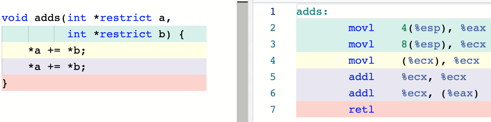
Strict aliasing

Union types
union U {
uint32_t u;
float f;
char bytes[4];
}
assert(sizeof(union U) == 4);
Glibc malloc

-
C++'s
newuses malloc -
Python: malloc + reference counting + GC
-
Go, Java: garbage collection
- Overcommit. OOM killer.
- Memory leaks, double free, use after free.
Address sanitizer
gcc -fsanitize=address myprog.c
Valgrind
Valgrind is in essence a virtual machine using just-in-time
(JIT) compilation techniques, including dynamic
recompilation. Nothing from the original program ever gets
run directly on the host processor. Instead, Valgrind first
translates the program into a temporary, simpler form called
Intermediate Representation (IR), which is a
processor-neutral, SSA-based form. ...
...usually, code run with Valgrind ...runs at 20% to 25% of
the speed of the normal program.
Bits and pieces
Иногда хочется работать с отдельными битами внутри значения.
Вспомним кодировку UTF-8:
0xxxxxxx — cимвол ASCII
110xxxxx 10xxxxxx
1110xxxx 10xxxxxx 10xxxxxx
11110xxx 10xxxxxx 10xxxxxx 10xxxxxx
Операторы сдвига я языке Си:
x << n
x >> n
Undefined behaviour, если:
— An expression is shifted by a negative number or by an amount greater than or equal to the width of the promoted expression (6.5.7). — An expression having signed promoted type is left-shifted and either the value of the expression is negative or the result of shifting would be not be representable in the promoted type (6.5.7).
Например:
7 << 2 // 28
7 << -1 // UB
7 << 30 // на нашей платформе UB
-1 >> 1 // implementation defined
0xABCDEFFFu << 4 // 0xBCDEFFF0u
0 << 32 // на нашей платформе UB
Давайте пробовать классифицировать байты из UTF-8:
_Bool is_ascii(char b) {
// return (b >> 7) == 0; // nope, could be signed char
return ((unsigned char) b >> 7) == 0;
}
_Bool is_continuation(unsigned char b) {
// return (b >> 6) == 0b10; // valid in C++14
return (b >> 6) == 2;
}
_Bool is_2_byte_start(unsigned char b) {
return (b >> 5) == 6; // 0b110
}
Вместо сдвигов можно воспользоваться битовыми масками:
_Bool is_2_byte_start(unsigned char b) {
return (b & 0xE0) == 0xC0; // 0b1110'0000, 0b1100'0000
}
Битовые поля:
struct u8char {
uint8_t sign_bit : 1;
uint8_t tail_bits : 7;
}
union char_breaker {
uint8_t number;
struct u8char fields;
}
...
union char_breaker cb = {.number = 'x'};
cb.fields.sign_bit; // implementation defined if this is the sign bit :-(
setjmp / longjmp
#include <setjmp.h>
int setjmp(jmp_buf env);
void longjmp(jmp_buf env);
Inline assembly
// Basic asm
asm("nop");
// Extended asm
// asm(template : outputs : inputs : clobbers)
Какое-то красивое подробное описание
g - general effective address
m - memory effective address
r - register
i - immediate value, 0..0xffffffff
n - immediate value known at compile time.
("i" would allow an address known only at link time)
But there are some i386-specific ones described in the processor-specific
part of the manual and in more detail in GCC's i386.h:
q - byte-addressable register (eax, ebx, ecx, edx)
A - eax or edx
a, b, c, d, S, D - eax, ebx, ecx, edx, esi, edi respectively
I - immediate 0..31
J - immediate 0..63
K - immediate 255
L - immediate 65535
M - immediate 0..3 (shifts that can be done with lea)
N - immediate 0..255 (one-byte immediate value)
git
$ whatis git | grep stupid
git(1) - the stupid content tracker
xkcd, объясняющий, как устроена лекция
Tracking work on projects
Создадим репозиторий — директорию, в которой будет храниться исходный код нашего проекта:
~$ mkdir chaos
~$ cd chaos
chaos$ git init -b main
Initialized empty Git repository in /home/myltsev/chaos/.git/
Напишем для нашего проекта README и сохраним его с помощью git:
chaos$ echo 'A project to develop a new operating system.' >README
chaos$ git add README
chaos$ git commit -m 'Add README.'
[main (root-commit) 12328ce] Add README.
1 file changed, 1 insertion(+)
create mode 100644 README
Так началась история нашего проекта:
chaos$ git log
commit 12328ce18536e38c3d2a6921a953b0bea7ef1eeb (HEAD -> main)
Author: Alexander Myltsev <a.myltsev@gmail.com>
Date: Fri Jan 12 18:46:40 2024 +0400
Add README.
Добавим ещё файл, чтобы в истории проекта было два разных записанных момента:
chaos$ touch main.c
chaos$ git add main.c
chaos$ git commit
[main f5c5cbf] Start actual programming.
1 file changed, 0 insertions(+), 0 deletions(-)
create mode 100644 main.c
Beautiful tree model
Посмотрим, как именно git хранит содержимое нашего файла. Он приписывает спереди
к содержимому "blob ДЛИНА\0" и берёт от результата хэш SHA-1, а потом
складывает содержимое в соответствующий файл на диске:
chaos$ echo -e 'blob 45\0A project to develop a new operating system.' | sha1sum
e750a68af1f2f3712d7f43ad5d64a8d363b2568f -
chaos$ ls .git/objects/e7
50a68af1f2f3712d7f43ad5d64a8d363b2568f
chaos$ python3 -c 'import zlib; print(zlib.decompress(open(".git/objects/e7/50a68af1f2f3712d7f43ad5d64a8d363b2568f", "rb").read()))'
b'blob 45\x00A project to develop a new operating system.\n'
Таким образом, git использует content-addressable storage: данное содержимое файла всегда хранится под одним и тем же именем. Директория будет храниться как список имён файлов с указанием хешей их содержимого:
chaos$ git cat-file -p bd452a89d490ea711965f9688cc60559afd25e33
100644 blob e750a68af1f2f3712d7f43ad5d64a8d363b2568f README
100644 blob e69de29bb2d1d6434b8b29ae775ad8c2e48c5391 main.c
Коммит (записанный момент в истории) хранится как ссылка на корневую директорию и набор метаинформации (имя автора, метка времени, описание коммита, идентификатор родительского коммита и др.):
chaos$ git cat-file -p HEAD
tree bd452a89d490ea711965f9688cc60559afd25e33
parent 12328ce18536e38c3d2a6921a953b0bea7ef1eeb
author Alexander Myltsev <a.myltsev@gmail.com> 1705074661 +0400
committer Alexander Myltsev <a.myltsev@gmail.com> 1705074661 +0400
Start actual programming.
Таким образом, объекты в хранилище, ссылаясь друг на друга, образуют ациклический направленный граф (DAG).
У нас в репозитории сейчас два коммита,
но один из них имеет специальное значение: он «самый актуальный»,
соответствует состоянию рабочей копии и станет родителем
следующего коммита. Этот коммит будем называть головным (HEAD).
Скорее всего нам потребуется в разные моменты времени считать головным разные
коммиты — например, мы хотим работать над несколькими задачами, переключаясь
между ними, и каждой задаче соответствует своя последовательность вносимых
изменений. Понятно, как это сделать: запишем идентификаторы этих коммитов в файлы с
понятными именами в директории heads и дадим пользователю возможность
обращаться к коммитам по этим именам.
Посмотрим, какие heads есть сейчас в нашем репозитории:
$ ls .git/refs/heads
main
$ cat .git/refs/heads/main
f5c5cbf218fe113a1fa282b6c8046a245d5a07a6
А вот какой head на самом деле является сейчас головным коммитом:
$ cat .git/HEAD
ref: refs/heads/main
Каждый head-коммит вместе с цепочкой его предшественников принято называть
веткой разработки (branch).
Теперь у нас есть возможность обращаться к коммитам как по их SHA1-хэшу,
так и по названиям из heads. Чтобы добыть хэш коммита по имени, есть утилита
git rev-parse:
$ git rev-parse main
f5c5cbf218fe113a1fa282b6c8046a245d5a07a6
$ git rev-parse HEAD
f5c5cbf218fe113a1fa282b6c8046a245d5a07a6
На самом деле SHA1-хэш необязательно писать полностью — достаточно уникального префикса:
$ git rev-parse f5c5
f5c5cbf218fe113a1fa282b6c8046a245d5a07a6
Есть также нотация для обращения к родительским коммитам:
$ git rev-parse HEAD^ # ^ — первый родитель
12328ce18536e38c3d2a6921a953b0bea7ef1eeb
$ git rev-parse HEAD~1 # ~n — n-тый прародитель
12328ce18536e38c3d2a6921a953b0bea7ef1eeb
Just memorize these shell commands
branches
Создадим дополнительную ветку разработки из предыдущего коммита:
$ git switch -c feature HEAD^
Switched to a new branch 'feature'
Теперь у нас две ветки, из которых активна ветка feature:
$ git branch
* feature
main
$ ls
README
Как видно, в этом коммите ещё нет файла main.c.
С помощью git switch можно переключаться между ветками:
chaos$ git switch main
Switched to branch 'main'
chaos$ ls
README main.c
Сейчас история коммитов выглядит так:
Переключимся на ветку feature и сделаем там новый коммит:
$ git switch feature
Switched to branch 'feature'
$ echo '#include <stdio.h>' >main.c
$ git add main.c
$ git commit -m 'Include stdio.h.'
[feature 6a83b31] Include stdio.h.
1 file changed, 1 insertion(+)
create mode 100644 main.c
Теперь у нас есть две ветки, которые не являются предками
друг друга (diverging branches):

index
В рабочей копии могут быть файлы, которые git не отслеживает, — например, объектные, исполняемые и временные файлы. Кроме того, не все изменения в отслеживаемых файлах обязаны включаться в следующий коммит.
Чтобы подготовить содержимое следующего коммита, в git есть
индекс (index или staging area). Получается такой маршрут:
- Правим файлы в рабочей копии (
vim). - Копируем изменения в индекс (
git addи др.). - Создаём коммит с содержимым индекса (
git commit).
Попробуем сделать изменения, но не добавлять их в индекс, а сразу сделать новый коммит:
$ echo '#include <stdlib.h>' >>main.c
$ git commit
On branch main
Changes not staged for commit:
(use "git add <file>..." to update what will be committed)
(use "git restore <file>..." to discard changes in working directory)
modified: main.c
no changes added to commit (use "git add" and/or "git commit -a")
Наши изменения сейчас есть только в рабочей копии, но не в индексе:

Добавим их в индекс и создадим новый коммит:
chaos$ git add main.c
chaos$ git diff --cached --stat
main.c | 1 +
1 file changed, 1 insertion(+)
chaos$ git commit -m 'Include stdlib.h.'
[main 16b1dc9] Include stdlib.h.
1 file changed, 1 insertion(+)
Можно добавлять в индекс не все изменения в файле,
например, с помощью интерактивной команды git add -p
(она будет спрашивать вас отдельно про каждое изменение).
Восстановить содержимое индекса из HEAD можно
с помощью git restore --staged [-p].
Все изменения в отслеживаемых файлах можно закоммитить
с помощью git commit -a.
merging
Для слияния изменений в разных ветках имеется команда git merge.
Попытаемся учесть в main изменения, сделанные в feature.
$ git merge feature
Auto-merging main.c
CONFLICT (add/add): Merge conflict in main.c
Automatic merge failed; fix conflicts and then commit the result.
git не знает, как объединить изменения, сделанные в двух ветках.
Поэтому он оставляет в файле main.c маркеры конфликта,
а сам файл в индексе помечен как unmerged:
chaos$ cat main.c
««««««« HEAD
#include <stdlib.h>
=======
#include <stdio.h>
»»»»»»» feature
chaos$ git status
On branch main
You have unmerged paths.
(fix conflicts and run "git commit")
(use "git merge --abort" to abort the merge)
Unmerged paths:
(use "git add <file>..." to mark resolution)
both added: main.c
no changes added to commit (use "git add" and/or "git commit -a")
Чтобы завершить слияние, нужно отредактировать unmerged файлы и добавить в индекс их правильные версии, а затем создать коммит:
$ vim main.c
$ git add main.c
$ git commit
[main 3a4c639] Merge branch 'feature'
Созданный коммит является слиянием (merge commit), то есть имеет больше одного родителя:
$ git show
commit 3a4c6391190b85c8c4f9d19177d464b0acce5b36 (HEAD -> main)
Merge: 16b1dc9 6a83b31
...
git log --graph отображает это соответствующим образом:

Попробуем теперь сделать обратное слияние: добавить в feature изменения, сделанные в main.
$ git switch feature
Switched to branch 'feature'
chaos$ git merge main
Updating 6a83b31..3a4c639
Fast-forward
main.c | 1 +
1 file changed, 1 insertion(+)
Поскольку feature была предком main, слияние произошло
более простым способом — feature теперь просто является синонимом
main:

Такой способ слияния называется перемоткой (fast forward). Нового коммита при этом не создаётся.
remotes
Для взаимодействия с другими репозиториями существует механизм
remotes. Я сделал себе пустой репозиторий на gitlab.myltsev.ru
и добавляю его как remote с именем origin:
$ git remote add origin git@gitlab.myltsev.ru:myltsev/chaos.git
Отправим туда нашу ветку main:
$ git push origin main
Enumerating objects: 15, done.
Counting objects: 100% (15/15), done.
Delta compression using up to 8 threads
Compressing objects: 100% (9/9), done.
Writing objects: 100% (15/15), 1.28 KiB | 1.28 MiB/s, done.
Total 15 (delta 1), reused 0 (delta 0), pack-reused 0
To ssh://gitlab.myltsev.ru/myltsev/chaos.git
* [new branch] main -> main
Можно добавлять новые коммиты в ветку main и отправлять их туда же той же
командой. Если, как правило, мы будем
отправлять коммиты из main именно в эту ветку этого
remote, то имеет смысл сообщить git-у, что это ветка является
для main апстримом. Для этого добавим опцию -u/--set-upstream:
$ git push -u origin main
branch 'main' set up to track 'origin/main'.
Everything up-to-date
В файле .git/config появилась соответствующая запись:
[branch "main"]
remote = origin
merge = refs/heads/main
git push будет по умолчанию работать именно с апстримной веткой.
В локальном репозитории хранятся копии головных коммитов из remotes:
$ cat .git/refs/remotes/origin/main
3a4c6391190b85c8c4f9d19177d464b0acce5b36
git switch умеет догадываться о том, что локальную ветку нужно создать из
remote-ветки с таким же названием:
$ git switch tmp
branch 'tmp' set up to track 'origin/tmp'.
Switched to a new branch 'tmp'
git fetch обновляет refs/remotes и приносит
в локальное хранилище недостающие объекты.
git pull — это сочетание fetch + merge:
обновить локальные копии remote-коммитов и провести слияние.
Если локально новых коммитов в ветке нет, а в remote они появились,
то fetch принесёт их в локальный репозиторий, а merge
сведётся к перемотке:
$ git pull
Updating 3a4c639..20992d8
Fast-forward
main.c | 4 ++++
1 file changed, 4 insertions(+)
git push по умолчанию работает, только если remote-ветка
является предком локальной (то есть её можно перемотать
до локальной). Если remote-ветка и локальная ветка не являются
предками друг друга (divergent branches), то push
отказывается работать:
$ git push
To ssh://gitlab.myltsev.ru/myltsev/chaos.git
! [rejected] main -> main (fetch first)
error: failed to push some refs to 'ssh://gitlab.myltsev.ru/myltsev/chaos.git'
hint: Updates were rejected because the remote contains work that you do not
hint: have locally. This is usually caused by another repository pushing to
hint: the same ref. If you want to integrate the remote changes, use
hint: 'git pull' before pushing again.
hint: See the 'Note about fast-forwards' in 'git push --help' for details.
Беда в том, что по умолчанию git pull в этой ситуации тоже по умолчанию ведёт себя несговорчиво:
$ git pull
remote: Enumerating objects: 5, done.
remote: Counting objects: 100% (5/5), done.
remote: Compressing objects: 100% (3/3), done.
remote: Total 3 (delta 1), reused 0 (delta 0), pack-reused 0
Unpacking objects: 100% (3/3), 281 bytes | 140.00 KiB/s, done.
From ssh://gitlab.myltsev.ru/myltsev/chaos
20992d8..f54e8cf main -> origin/main
hint: You have divergent branches and need to specify how to reconcile them.
hint: You can do so by running one of the following commands sometime before
hint: your next pull:
hint:
hint: git config pull.rebase false # merge
hint: git config pull.rebase true # rebase
hint: git config pull.ff only # fast-forward only
hint:
hint: You can replace "git config" with "git config --global" to set a default
hint: preference for all repositories. You can also pass --rebase, --no-rebase,
hint: or --ff-only on the command line to override the configured default per
hint: invocation.
fatal: Need to specify how to reconcile divergent branches.
Безопасным вариантом в данном случае является опция
--no-rebase, которая выполнит слияние локальной и удалённой
ветки.
rebasing
⚠ Here be dragons!
Операционная система
Комплекс программ.
Организует доступ к ресурсам ЭВМ:
- унифицирует,
- разграничивает,
- мультиплексирует,
- учитывает и квотирует.
Для всего этого требуется привилегированный режим работы процессора. Часть ОС, использующую этот режим, принято называть ядром (kernel).
Ядро бывает:
- монолитное,
- модульное (например, Linux),
- микроядро (microkernel).
Взаимодействие с устройствами
Memory-mapped и port-mapped IO.
Например, видеопамять
Работа с портами: инструкции in, out.
Например, VGA использует, кроме прочих, порты 0x3d4 и 0x3d5.
Polling.
Загрузка компьютера с BIOS
(сейчас на вашем x86-совместимом компьютере UEFI, но идея та же)
Часть адресов RAM отображена на ROM, где лежит firmware.
Структура адресуемой памяти x86
При включении компьютера процессор работает в режиме совместимости с IBM PC (16-битный real mode), исполнение начинается по адресу 0xFFFF0 (reset vector).
Сегментная модель памяти :-(
IBM PC мог адресовать 1 MB памяти (20-битная шина адреса), а регистры были 16-битные.
Сегментные регистры: cs, ds, es, ss (fs, gs в 32-битном режиме).
Каждое обращение к памяти происходит по адресу из двух частей:
сегментные регистр и смещение. Физический адрес равен 16 * seg + offset.
mov [ds:ax], 42 // обращение к памяти по адресу 16 * ds + ax
Загрузка с диска
BIOS инициализирует и тестирует оборудование компьютера, а затем читает с загрузочного диска первый сектор (512 байт) и передаёт ему управление.
Учебная ОС yabloko
Учебную операционную систему мы запускаем в эмуляторе. Скрипт установки под macOS и Linux находится в файле setup.sh.
Среди файлов есть mbr.S (master boot record). Он должен умещаться в 512 байт и будет складываться в первый сектор эмулируемого жесткого диска.
DRIVERS
В drivers/port.h лежат обертки port-mapped IO для языка C, написанные в виде ассемблерных вставок:
static inline unsigned char port_byte_in(unsigned short port) {
unsigned char result;
// инструкция in, берет номер порта из регистра %dx, а кладёт результат в регистр %al
__asm__("in %%dx, %%al" : "=a" (result) : "d" (port));
return result;
}
Нам нужно что-то печатать на экран, для этого есть drivers/vga.h и drivers/vga.с для работы со стандартным графическим адаптером VGA. Когда компьютер загружается, экран работает в текстовом режиме и содержит 25 строк и 80 столбцов. Линейно лежат пары байт: в одном — символ, в другом — цвет фона и цвет самого символа. Символы нумеруются построчно начиная с левого верхнего края экрана.
char* const video_memory = (char*) 0xb8000; // видео-память отображена по адресу 0xb8000 (memory-mapped IO)
void vga_set_char(unsigned offset, char c) {
video_memory[2 * offset] = c; // сам символ
video_memory[2 * offset + 1] = get_color(light_gray, black); // цвет; пишем светло-серым по черному
}
Так как мы не всегда будем пользоваться эмулятором в графическом режиме (не всегда будет настоящий монитор), необходимо эмулировать также последовательный порт, способный передавать байты. Код в drivers/uart.h и drivers/uart.c
KERNEL
Посмотрим на kernel.c:
void _start() {
uartinit(); // запускаем последовательный порт
vga_clear_screen(); // очищаем экран
printk("\nYABLOKO\n"); // выводим текст
asm("hlt"); // остановиться и ничего не делать
}
Заметим несколько вещей в kernel.c:
- Функция
vga_clear_screen()заполняет весь экран пробелами. printk("\nYABLOKO\n")выводит текст не только на экран, но и на последовательный порт. На данный момент у нас не реализованы прокрутка экрана и курсор; мы не умеем работать с клавиатурой и вводом.- У нас нет способа выключить компьютер; нам придется делать это платформо-специфичным путём с помощью
qemu_shutdown()
Существует две реализации языка C:
- Hosted реализация подразумевает, что есть операционная система, есть стандартная библиотека языка C и реализованные в ней функции. На эту реализацию мы рассчитываем при запуске компилятора gcc.
- Freestanding реализация используется для ядра, подразумевает, что мы работаем без операционной системы, сами организуем загрузку бинарника и начало исполнения в нужной точке. Особенность freestanding режима — отсутствие функции main(); пишем _start — это стандартное название для точки входа в ELF-бинарник. При сборке передаем опцию
-ffreestanding, чтобы работать именно с этой реализацией.
Так же важный момент сборки -Ttext 0x1000 — мы указываем, с какого адреса начинается секция text. В адресуемой памяти x86 этот адрес как раз попадает в диапазон usable memory.
MASTER BOOT RECORD
BIOS читает загрузчик в память по адресу 0x7c00 и на этот же адрес передает выполнение. Задача — скомпоновать mbr так, чтобы он с этого адреса начинался.
Чтобы запустить под отладчиком целый компьютер, нужен следующий кусок в Makefile
debug-boot-nox: image.bin mbr.elf
qemu-system-i386 -nographic -drive format=raw,file=$< **-s -S** & // "взаимодействуй с отладчиком и подожди, пока отладчик подключится"
$(GDB) mbr.elf \
-ex "set architecture i8086" \ // архитектура 8086 (16-битная архитектура)
-ex "target remote localhost:1234" \ // эмулятор по адресу localhost:1234 запустит gdb сервер и будет ждать, когда подключится отладчик
-ex "break *0x7c00" \ // breakpoint на адрес входа в загрузчик
-ex "continue" // продолжить исполнение
Посмотрим ближе на mbr.S под отладчиком:
.code16
.global _start
_start:
// по договоренностям в %dl BIOS передает загрузчику номер диска,
// с которого он загрузчик прочитал; поэтому этот регистр сохраняется в boot_drive
mov %dl, boot_drive
mov $banner, %si
call print_string // посимвольная печать banner
call get_drive_geometry
call load_kernel
call switch_to_32bit
hlt
jmp . // loop forever
Для ввода-вывода в загрузчике используются функции BIOS. Пример можно увидеть в print_string: в регистр %ah кладётся магическое значение 0x0e, а в %al кладется символ; при вызове int $0x10 символ печатается на экран. Следующий код печатает посимвольно строку:
.code16
print_string:
mov $0x0e, %ah // "teletype output"
repeat:
lodsb // equivalent to mov (%si), %al; inc %si
test %al, %al
je done
int $0x10 // bios interrupt
jmp repeat
done:
ret
В fs/fs.h описана структура файловой системы: первый сектор она использует для собственных нужд, со следующего сектора начинается первый файл. Пока что у нас один файл kernel.bin, он находится начиная с третьего сектора диска.
/* Directory structure:
32-byte entries
┌───────────────────────────────┐
│Reserved │
│char[32] │
├──────┬──────┬────────┬────────┤
│Offset│Size │Reserved│Name │
│uint32│uint32│uint32 │char[20]│
├──────┼──────┼────────┼────────┤
│ ... │ │ │ │
Offset is in sectors (zero-based),
size is in bytes, name is 0-terminated.
*/
Результирующий образ диска состоит из загрузочного сектора и файловой системы.
Так как нет встроенного драйвера жесткого диска, мы читаем с диска секторы с ядром с помощью BIOS, как и загрузчик. Реализация находится в функции load_kernel в mbr.S. Результат работы этой функции:
- В памяти оказывается ядро (то, что идёт после заголовка в ELF-файле)
- В переменной entry оказывается адрес точки входа, на которую мы позже будем передавать управление.
Чтобы загрузить ELF-файл нам надо прочитать программные заголовки и для каждого из них загрузить секцию по соответствующему адресу. Но у нас это реализовано по-другому: мы рассчитываем, что ELF-файл можно загрузить в память одним куском без разграничения доступа, защиты памяти. Мы также находимся в 16-битном режиме и используем функции BIOS (см. int 0x13)
После load_kernel мы переходим в 32-битный режим, так как ядро мы собирали как 32-битный бинарник. Поскольку IBM PC умел адресовать только 1Мб памяти, у него было 20 дорожек на адресной шине ($2^{20}$ байт = 1 Мбайт): A0-A19. С появлением компьютеров, способных адресовать большее количество памяти, возникла проблема совместимости: старый софт рассчитывал, что в адресе больше 1Мб старшие биты адреса обрезаются. Для того чтобы вывести компьютер из этого режима совместимости, нужно провести некоторые манипуляции (первые две строки функции):
switch_to_32bit:
mov $2, %al
out %al, $0x92 // enable A20
cli // 1. disable interrupts
// в процессоре есть специальный регистр, указывающий на gdt, и мы загружаем таблицу в него:
lgdt gdt_descriptor // 2. load GDT descriptor
// меняем младший бит в регистре %cr0; так мы переходим из real mode в protected
mov %cr0, %eax
or $1, %eax // 3. enable protected mode
mov %eax, %cr0
// мы не можем загрузить %cs напрямую с помощью mov, поэтому пользуемся long jump - он загружает %cs и %eip
ljmp $SEG_KCODE << 3, $init_32bit // 4. far jump
Сегментные регистры cs, ds, cs, ds, ss, es, fs, gs теперь означают не смещение в памяти, а индекс в таблице дескрипторов (Global Descriptor Table) — структуре данных, где указаны сегменты и их особенности (например, код ядра должен исполняться только на высоком уровне привилегий; старый 16-битный код должен исполняться в режиме совместимости). Таблицу дескрипторов можно увидеть ниже:
gdt_start:
.quad 0x0 // null descriptor, необходимость
SEG_ASM(STA_X|STA_R, 0x0, 0xffffffff) // code seg, доступный на чтение и исполнение, адрес от 0x0 до 0xffffffff
SEG_ASM(STA_W, 0x0, 0xffffffff) // data seg, доступный на запись (и автоматически на чтение)
gdt_end:
То, как раскрываются макросы, можно посмотреть в cpu/gdt.h
Переключившись в 32-битный режим, мы должны создать стек и переключиться на исполнение кода из kernel.c:
mov $KERN_STACK_BASE, %ebp // создание стека
mov %ebp, %esp
movzwl entry, %esi // сохраненный адрес точки входа
call *%esi // переключение на исполнение кода ядра
Interrupts
Про прерывания в общих чертах.
В процессоре есть механизм (Traps), который наша операционная система использует и который обслуживает следующие три вещи:
-
Hardware interrupts (Аппаратные прерывания).
-
Exception (Исключительные ситуации).
-
Software interrupts (Программные прерывания).
Чего мы в принципе хотим добиться, используя этот механизм? Представим следующую ситуацию:
mov ...
nop <---- eip
add ...
key_pressed:
in $KEYBOARD_PORT, %al // кладём в какой-то буффер.
iret // чо пон мниная единица * ret?? (выясним позже, что это такое)
Наша программа исполняет какие-то инструкции и тут в этом время пользователь жмёт кнопку на клавиатуре. Мы договорились заранее с процессором, что есть какой-то магический адрес key_pressed, на который во время прерывания должен перейти регистр eip, выполнить пару инструкций (положить нажатую кнопку в какой-то буффер, например) и прыгнуть обратно - исполнять код.
Как происходит механизм аппаратных (асинхронных) прерываний схематически?
Примерно так:
-
Во-первых, процессор должен откуда-то узнать, что пользователь нажал на клавиатуру.
-
Во-вторых, узнав об этом, он должен где-то посмотреть - есть ли обработчик для данного события.
-
В-третьих, выяснив, что обработчик есть - он должен это как-то обработать, сохранив текущее состояние процессора (включая все регистры).
-
После обработки прерывания мы возвращаемся в наш код с помощью iret - инструкции, которая извлекает из стека три верхних значения и помещает их в регистры IP, CS и флагов.
У процессора есть свой флаг в регистре флагов - IF (interrupt flag), который недоступен к модификации из пользовательских программ (не из пользовательских возможно с помощью cli и sti) .
Если IF взведён (то есть равен 1), то после каждой инструкции у процессора происходит проверка на наличие прерываний - если они есть, то происходит как раз тот самый механизм, который мы до этого обсуждали.
Если же IF не взведён (=0), то процессор просто не реагирует на маскируемые аппаратные прерывания и откладывает эту реакцию до более удобного момента.
Про остальное
Программные прерывания и исключения обрабатываются тем же самым механизмом ловушек.
Вызвать программное прерывание можно с помощью ассемблерной инструкции int.
Interrupt Controller (Контроллер прерываний)
Нам не хотелось бы обрабатывать приоритеты и очереди прерываний в самом процессоре, тем самым загружая его данной работой. Все эти обработки выносят в отдельную микросхему, которая называется interrupt controller. Мы будем пользоваться стандартом PIC (Programmable Interrupt Controller), который рассчитывает на то, что с ним работает один процессор. В современном компьютере все же устроено немного сложнее - там у каждого ядра процессора есть свой LAPIC (Local Advanded PIC), а глобально во всей системе есть IO APIC (Input Output APIC), который распределяет прерывания между ядрами.

Назревает сразу же вопрос - “Как же PIC узнает про то, что центральный процессор обработал прерывание и можно сбрасывать сигнал об этом прерывании и браться за следующее?”
Так вот, CPU взаимодействует с PIC с помощью Port Mapped IO — так и узнает.
Как устроены прерывания в Yabloko
Мы не хотим поллить клавиатуру и постоянно спрашивать о том, не перенажал ли пользователь какую-то кнопку и хотим ловить прерывание, которое присылает клавиатура, обрабатывать его и выводить символ, который к нам приехал. Что нам для этого понадобится? Для этого нам нужна таблица обработчиков прерываний. Для каждого приходящего нам прерывания у нас есть структура idt_gate_t. Для каждого номера прерывания в таблице обработчиков (про природу этих номеров чуть дальше) хранится структура, которая соответствующим образом выстраивает работу с памятью. Посмотрим как выглядит таблица:
enum {
IDT_HANDLERS = 256,
};
idt_gate_t idt[IDT_HANDLERS];
То есть сами прерывания приходят в виде номера int X → handler, где handler - это структура idt_gate_t idt[X] в нашей таблице. В целом, обработчик это код, который лежит по адресу памяти. Теперь посмотрим на структуру idt_gate_t:
typedef struct {
uint16_t low_offset;
uint16_t selector; // это поле содержит в себе номер сегмента, который
// будет загружен в cs. Менять значение cs может потребоваться, когда мы
// в пользовательском коде (режим с пониженными привилегиями) ловим прерывания,
// но обрабатываем их уже в ядре (режим с повышенными привилегиями).
uint8_t always0;
uint8_t type: 4; // : 4 - означает, что поле type занимает только 4 бита
// вместо 8
uint8_t s: 1;
uint8_t dpl: 2;
uint8_t p: 1;
uint16_t high_offset;
} __attribute__((packed)) idt_gate_t;
Мы работаем в 32-битном режиме и соответственно адрес у нас также 32-битный, поэтому мы режем наш адрес на две части: low_offset (раньше было так, что она была 16-битная и была только эта часть) и high_offset (то, что добавили потом).
Теперь поговорим про природу номеров прерываний, они же индексы в таблице прерываний. По-другому они называются векторами прерываний. Первые 32 вектора зарезервировал Intel, они же оставляют за собой право их доопределить до 32 (то есть до 31 номера) в следующих процессорах. Рассмотрим первые 19 из них, которые определены:
const char * const exception_messages[] = {
[0] = "Division By Zero",
[1] = "Debug",
[2] = "Non Maskable Interrupt",
[3] = "Breakpoint",
[4] = "Into Detected Overflow",
[5] = "Out of Bounds",
[6] = "Invalid Opcode", // на тот случай, когда процессор прочитал инстру-
// -кцию, а декодировать её не может (возможно какой-то мусор попался)
[7] = "No Coprocessor",
[8] = "Double Fault", // случай когда, произошла исключительная ситуация с
// номером от 0 до 7, но для неё не нашлось обработчика. Если обработчик не
// сработал и для Double Fault, то возникает уже Triple Fault и процессор
// перезагружается.
[9] = "Coprocessor Segment Overrun",
[10] = "Bad TSS",
[11] = "Segment Not Present",
[12] = "Stack Fault",
[13] = "General Protection Fault", // случай, когда не хватает прав для рабо-
// -ты с памятью, например, записываем что-то в read-only памяти. Эта же ситуация
// может возникнуть при программировании ядра, когда мы не написали
// что-то для сегментов.
[14] = "Page Fault",
[15] = "Unknown Interrupt",
[16] = "Coprocessor Fault",
[17] = "Alignment Check",
[18] = "Machine Check",
};
Например, если процессор ловит исключительную ситуацию - “деление на 0”, он всегда возбуждает вектор прерывания с номером 0.
Дальше нам хотелось бы иметь векторы, которые работают с прерываниями у разных устройств компьютера. Схема этого процесса выглядит таким образом:
Device ->> PIC ->> CPU
Если что-то случилось с устройством компьютера, оно сигнализирует PIC об этом, PIC хранит информацию о том, что на устройстве было конкретное прерывание с конкретным номером и пока процессор не обработает его, PIC будет напоминать об этом CPU. Например, клавиатура, присоединенная на первой ноге к PIC, присылает IRQ1 (interrupt request - запрос на прерывание) на PIC, дальше PIC делает смещение относительно 0x20 для IRQ и уже на процессор приходит то, что вызван 33-й по счету вектор.
Как обрабатывает прерывания сам процессор? Посмотрим на код:
/*
* mov ... // IF = 1
* ------ // interrupt handling started
* push eflags
* push error_code
* push eip
* push cs
* cli
* ljmp handler_segment:handler_offset // cs, eip = handler_segment, handler_offset
*/
Пусть выполняется какая-то инструкция (например, mov) во время исполнения которой был взведён флаг IF (Interrupt flag), то есть процессор будет готов к обработке прерываний. Дальше процессор проверяет не сигналит ли PIC о наличии прерывания и если он действительно сигналит, то он начинает обрабатывать это прерывание. Процессор сразу же начинает в текущем стеке обработку прерывания, то есть сразу после исполнения mov. Процессор кладет значение флагов, error_code (код ошибки - доп. информация о ней), instruction pointer’а, cs и отключает прерывания инструкцией cli, которая сбрасывает флаг IF, чтобы обработчик не мог сразу быть прерван ещё раз новым прерыванием. Далее процессор смотрит в таблицу с гейтами, добывает оттуда новое значение cs и eip, загружает их. Потом мы переходим на сегмент и адрес прерывания, который лежит в таблице обработчиков. Остальные регистры в процессе мы не трогали и чтобы их не испортить нам придется их самим сохранить и восстановить, когда мы закончим обрабатывать прерывание. Есть проблема: ни в какой момент никуда не сохраняется номер вектора прерывания. Единственное, что от него зависит это пушить или нет код ошибки (error_code) и на какой хэндлер (handler_segment:handler_offset) переходить. Другой информации о том, какой вектор прерывания мы обрабатываем у нас нет.
Обработчики.
Рассмотрим ассемблерный файл cpu/vector.S, здесь мы с помощью макро языка создаем 256 обработчиков исключений, которые мы будем называть vector\i (можете дизассамблировать файл с помощью objdump и увидите 256 функций). Эти вектора кладутся в default_handlers.
Рассмотрим сами вектора. На 31-ой строчке мы можем увидеть if — он кладет 0 в стек для тех векторов, в которых не был положен процессором код ошибки (это нужно для того, чтобы у всех обработчиков стек выглядел однородно). Потом уже мы делаем push номера обработчика.

Далее мы прыгаем в функцию alltraps, которая является общим обработчиком прерываний и лежит в том же файле.

С 5-ой по 8-ую строчку мы сохраняем все сегментные регистры (регистр cs за нас уже сохранил процессор), а инструкцией pushal мы сохраняем все регистры общего назначения (чтобы потом их всех восстановить). Далее мы вызываем уже Си-шную функцию trap, определённую в cpu/idt.c.
trap — это функция, которая принимает на вход указатель на структуру registers_t, которая уже в свою очередь определена в cpu/isr.h и выглядит следующим образом.

Нетрудно догадаться, что она просто хранит в себе всю информацию о сохраненных в alltraps регистров.
И чтобы передать указатель на registers_t мы кладём в 15-ой строчке функции alltraps регистр esp, который как раз указывает на начало нашей структуры
.

Как видим — функция trap не слишком гостеприимна и сразу же нас встречает двумя if-ами с 89-ой по 94-ую строки. Объяснения такие: чтобы контролер прерываний передал следующее прерывание процессору — нужно ему сообщить, что предыдущее мы уже завершили. Поэтому мы должны сказать, что произошла ситуация EOI - end of interrupt, но поскольку контроллеров прерываний у нас два, то с 32-ого вектора по 40-ой мы сообщаем одному контроллеру, а с 40-ого уже двум.
Далее мы уже в 97-ой строчке проверяем, что существует обработчик прерываний для нашего прерывания, и если он есть, то просто запускаем его.
Если прерывание имеет номер до 32 (зарезервированные интелом номера), то мы просто вызываем функцию panic (заставляем ядро паниковать), предварительно напечатав сообщение об ошибке, которое мы взяли с соответствующей таблицы.
Пора возвращаться домой.
После обработки исключения мы вернёмся обратно в функцию alltraps.

с 17-ой по 25-ую строчку мы восстановим все регистры, которые мы положили в стек (popal - противоположность pushal) а в 26-ой строчке убираем код ошибки и номер вектора со стека. Далее вызываем iret, который восстанавливает cs, eip и eflags, тем самым мы возвращаемся в ту точку программы, на которой мы были прерваны для обработки прерывания.
Разбор обработчика прерываний для клавиатуры.
Находится данный обработчик в файле driver/keyboard.c, загружаем мы его в таблицу обработчиков с помощью функции init_keyboard(), в которой вызывается register_interrupt_handler.

В 18-ой строчке из порта клавиатуры мы читаем scancode — номер клавиши и в верхних старших битах сообщение о состоянии нажатия клавиши.
Таблица сканкодов имеется в том же файлике:

А дальше просто очевидно обрабатываем scancode с таблицы и печатаем его на экран (25-ая строчка).
Как хендлеры попадают в таблицу обработчиков процессора?
Это происходит благодаря функции load_idt (из cpu/idt), которая вызывается в _start (kernel.c).

Функция init_idt просто заполняет нашу таблицу — она берёт адрес вектора из default_handlers и кладёт в таблицу idt_gate_t idt[IDT_HANDLERS]. Далее в специальную структуру мы кладём адрес нашей таблицы и с помощью ассемблерной инструкции lidt мы загружаем нашу таблицу обработчиков в процессор.
Кольца защиты
Каждая программа запускается с некоторым уровнем привелегий (информация о котором хранится в младших 2 битах регистра cs процессора), который может быть повышен и исключительных ситуациях. Программы, являющиеся частью операционной системы запускаются с уровнем привилегий 0 (наивысшим), пользовательские программы (userspace), запускаются с уровнем привилегий 3. Уровни привилегий 1 и 2 могут использоваться для исполнения драйверов внешних устройств (однако в современных ОС используются только кольца 0 и 3).
Привилегии колец:
Ring 0:
- Доступ к железу (port mapped IO, memory mapped IO)
- Служебные регистры (GDTR, IDTR, контрольные регистры)
- Служебные инструкции (lgdt, lidt, cli/sti, …)
Ring 3:
-
Доступ к инструкциям/регистрам общего назначения (полностью самостоятельно можно только пользоваться доступной памятью и что-то считать, за всем остальным придется звать ядро)
При исполнении кода из какого-либо сегмента, процессор смотрит в таблицу дескрипторов сегментов, и подгружает в cs номер дескриптора. Верхние 13 бит нового значения отвечают соответственно за этот самый номер в (GDT). В cs есть ещё 3 значащих бита(регистр 16-битный) - один бит локальности, по нему регистр понимает где смотреть дескрипторы, в локальной таблице дескрипторов (LDT), или в глобальной(GDT), и младшие 2 бита - TPL(Target privilege level). После загрузки номера дескриптора проверяется соответствие привилегий текущих и требуемых (CPL и TPR - current / target PL), и дескриптор загружается в кэш процессора.
Сегментация
При запуске Яблока создаются 4 базовых сегмента:
#define USER 3
#define KERNEL 0
#define UBASE 0xffff0000
// SEG(EFLAGS, base, offset, privilege level) - запись сегмента в GDT
void init_seg_desc(void) {
seg_desc[SEG_KCODE] = SEG(STA_X|STA_R, 0, 0xffffffff, KERNEL)
seg_desc[SEG_KDATA] = SEG(STA_W, 0, 0xffffffff, KERNEL)
seg_desc[SEG_UCODE] = SEG(STA_X|STA_R, UBASE, 0xffffffff - UBASE, USER)
seg_desc[SEG_UDATA] = SEG(STA_W, UBASE, 0xffffffff - UBASE, USER)
}
// соответственно, физический адрес памяти вычисляется следующим образом:
// base + SEG_OFFSET
Обработка прерываний
При возникновении прерывания (аппаратного или программного), процессору надо повысить свой уровень привилегий, обработать прерывание, а после понизить его обратно.
Псевдокод обработки прерывания:
vector X; ←- наш вектор прерываний
gate = idt[X]; <-- берём gate из таблицы прерываний по этому вектору
selector = gate.selector;
dpl = selector.pl; <-- уровень привилегий на котором должен быть обработан X
if cpl > dpl { // cpl - current privilege level
switch_stack();
change_privilege_level();
}
// обработка прерывания
Псевдо-реализация переключения стеков процессов:
- Сохраняем состояние программы (регистры) в стек
- Кладем в %esp верх другого стека
- С нового стека снимаем состояние программы (регистры) и продолжаем исполняться
Обработка прерываний в Яблоке:
void trap(registers_t *r) {
if(r->int_no == T_SYSCALL) { // отдельная проверка на системный вызов - частый частный случай прерывания
switch(r->eax) {
case SYS_exit:
if(r->ebx) {
kprinf("Success\n");
} else {
kprintf("Program finished with exit code %d\n", r->ebx);
}
killproc(); // переключение стека без сохранения текущего состояния
case SYS_greet:
kprintf("Hello world!\n");
r->eax = 0;
break;
default:
kprinf("Unknown syscall);
r->eax = -1;
break;
}
}
}
Системный вызов
инструкция int $0x84(Yabloko-specific, int $0x80 для Linux/i368) - обычное прерывание
%eax ← function
%ebx ← arg1
%ecx ← arg2
%edx ←arg3
Например, инструкция int $0x80 (системное прерывание 128), может вывести на экран строку, для этого в %eax должен быть номер функции (4 в данном случае), в
%ebx - файловый дескриптор (лучше перед вызовом проверить его валидность), в %ecx - адрес массива (не обязательно типа char), в %edx - sizeof() выводимого буффера.
// пример как может быть реализован тот же системный вызов write(...)
void print_string(int fd, char* str, int32_t length) {
asm volatile(
"mov $4, %eax \n"
"int $0x80 \n"
:
: "b"(fd), "c"(str), "d"(length)
: "eax" // indeed nessesary clobber
);
}
Виртуальная память
Страничная виртуальная память - отображение каждого “блока” памяти определенного размера на физическую память внутри процессора

- У каждого процесса свое отображение
- Стандартный размер страницы - 4KiB
- Первые 10 бит адреса - индекс page directory
- Вторые 10 бит - индекс в page table
- Оставшиеся 12 бит - смещение внутри страницы памяти
- Процессор может положить отображение в свой кэш(TLB - translation lookaside buffer) → отображение 20-битного префикса адреса на физический адрес памяти. Сбрасывается после переключения процесса
Операционная система
ПО, которое организует доступ к ресурсам компьютера:
- унифицирует (драйверы, файловая система, ...);
- разделяет (вытесняющая многозадачность, виртуальная память, ...);
- разграничивает (права доступа для пользователей, ...).
Чтобы ОС могла выполнять свои функции, нужна поддержка со стороны процессора: привилегированный режим, в котором будет исполняться часть ОС, называемая ядром (kernel).
Прикладные программы
Системные утилиты
Userspace
────────────────────────────────────────────────────────
Kernelspace
Ядро ОС (привилегированный
режим)
Переносимость и совместимость
API (application programming interface) — контракт на уровне исходного кода (source-level).
Пример — API стандартной библиотеки языка Си.
ABI (application binary interface) — контракт на уровне машинного кода и двоичного представления данных: соглашения о вызовах, способы компоновки, порядок загрузки и запуска программы, интерфейс взаимодействия с ядром ОС. Нас будет особенно интересовать ABI Linux/x86.
Семейство юниксовых
Картинка из Википедии:

В 70-х Кен Tомпсон и Деннис Ричи разработали ОС Research UNIX. В 80-е AT&T ее коммерциализировала. В это же время Ричард Столлман придумал проект GNU, для него не хватало ядра. В 90-е Линус Торвальс начал разрабатывать Linux, проект GNU его подхватил. Теперь мы пользуемся ОС GNU/Linux, название означает OC GNU и ядро Linux.
Все это развивалось в разных направлениях, переносить программы между разными юниксами было тяжело, были попытки обеспечить переносимость программ между разными юниксами.
В 1985 году компания AT&T специфицировала UNIX System V в документе System V Interface Definition (SVID).
В 1988 рабочая группа IEEE выпустила первый стандарт POSIX (portable operating system interface), который стандартизировал, что такое UNIX.
xkcd: How standards proliferate
1994, X/Open: Single UNIX Specification (SUS).
Системные вызовы на Linux/x86
Осуществляются (пока что магической) инструкцией int $0x80.
В регистре eax должен быть номер системного вызова,
а в регистрах ebx, ecx и edx — его аргументы по порядку.
Результат системного вызова возвращается в регистре eax.
Напишем программу bare.S, которая делает системный вызов exit,
не пользуясь стандартной библиотекой языка Си:
#include <sys/syscall.h>
.global _start
_start: // default ELF entry point
mov $SYS_exit, %eax // SYS_exit == 1
mov $42, %ebx // exit(int status) ← status = 42
int $0x80
Соберём её:
gcc -m32 -static -nostdlib bare.S -o bare
То же самое в виде программы на языке Си:
#include <sys/syscall.h>
void _start() {
asm volatile ("int $0x80" : : "a"(SYS_exit), "b"(42));
}
Системные вызовы документированы в секции 2 руководства
(manual), поэтому почитать документацию на системный вызов
exit можно так: man 2 exit.
Файлы
Главная сущность, которую мы будем изучать - файлы, поскольку в unix-подобных системах почти все ресурсы представлены именно через эту абстракцию.
Файл — последовательность байт, к которой ОС предоставляет доступ посредством файловых операций.
Например:
- файл на диске;
- вывод программы;
- пользовательский ввод;
- бесконечная последовательность случайных байт;
- всё содержимое диска;
- ...
───────────────────────────
... Mary had a little lamb, its ...
───────────────────────────
▲
│ file position
read(1) → "a"
read(5) → "d a l"
read(5) → "ittle"
write(5, " wolf")
───────────────────────────
... Mary had a little wolf, its ...
───────────────────────────
▲
│
lseek(-3, SEEK_CUR) // move file position 3 bytes to the left
───────────────────────────
... Mary had a little wolf, its ...
───────────────────────────
▲
│
Заметим, что системные вызовы write/read/lseek могут не иметь смысла при работе с конкретным файлом. Например, в файл “пользовательский ввод” нельзя ничего записать или подвинуть позицию чтения/записи.
Конец файла (EOF):
─────────────────────────┐
... il sole e l'altre stelle.│
─────────────────────────┘
▲
│
read(10) → "stelle."
read(10) → ""
write(5, " FIN.")
──────────────────────────────┐
... il sole e l'altre stelle. FIN.│
──────────────────────────────┘
▲
│
Q. А как пользователь понимает, где EOF?
A. EOF - ситуация, она нигде. EOF (end of file) - это не специальный символ, а ситуация, когда после запроса на считывание байтов считывается 0 байт.
Файловые дескрипторы
Операции для работы с файлами - это системные вызовы, то есть обращения к ядру. Чтобы объяснить ядру, c каким из файлов мы хотим работать, нужны идентификаторы. В качестве идентификаторов выступают файловые дескрипторы — целые числа.
char buf[10];
int fd = 3;
read(fd, buf, sizeof(buf));
Userspace
──────────────────────────────────────────
Kernelspace
0 → keyboard
1 → display
2 → display
3 → somefile.txt
- 0 (
STDIN_FILENO) — standard input - 1 (
STDOUT_FILENO) — standard output - 2 (
STDERR_FILENO) — standard error output
Q. Для разных процессов разные дескрипторы?
A. Да, у каждого процесса есть собственная таблица файловых дескрипторов.
POSIX file API
Системные вызовы read и write
#include <unistd.h>
ssize_t read(int fd, void *buf, size_t count); // ssize_t - знаковый size_t, нужен, чтобы помещалось значение -1
ssize_t write(int fd, const void *buf, size_t count);
- если считывание прошло успешно, read возвращает количество считанных байт (0, если достигли конца файла)
- если произошла ошибка, read возвращает -1, а также выставляет специальную переменную
errno. Вerrnoхранится номер последней произошедшей при системных вызовах ошибки
Напишем программу mycat, которая будет читать байты со стандартного входа и писать их на стандартный выход с помощью системных вызовов.
#include <unistd.h>
int main() {
char c; // наш буфер в один байт
while (read(STDIN_FILENO, &c, sizeof(c)) > 0) { // STFIN_FILENO = 0
write(STDOUT_FILENO, &c, sizeof(c)); // STDOUT_FILENO = 1
}
}
Чтобы сделать конец файла, нажмем ctrl + d. Так драйвер терминала порождает конец файла.
Q. Получается, ядро считывает ввод до \n?
A. Да. Это можно поменять с помощью драйвера терминала.
Команда strace показывает, какие системные вызовы совершает наша программа. Использовать вот так: strace ./mycat
Наш буфер сейчас 1 байт. Если файл очень большой, то программа будет работать долго, поскольку каждый системный вызов занимает некоторое время. Давайте увеличим буфер, в который читаем файл.
Q. Не получится ли плохая ситуация, когда в файле осталось читать только 100 байт, а мы просим 200?
A. Нет, когда мы просим считать больше байтов, чем осталось на чтение в файле, read считывает, сколько есть.
Системный вызов open
int open(const char *pathname, int flags);
int open(const char *pathname, int flags, mode_t mode);
- Если файл удалось открыть,
openвозвращает файловый дескриптор - Если не удалось,
openвернет -1, а также выставит номер ошибки в errno
Заметим, что приведены две функции open с разными сигнатурами. Язык С так не умеет, на самом деле функция open принимает произвольное количество параметров.
Напишем программу, которая умеет работать с аргументами командной строки
#include <unistd.h>
#include <sys/types.h>
#include <sys/stat.h>
#include <fcntl.h>
#include <stdio.h>
#include <stdlib.h>
void catfile(int sourcefd) {
char buf[10000];
ssize_t result;
while ((result = read(sourcefd, buf, sizeof(buf))) > 0) {
write(STDOUT_FILENO, buf, result);
}
}
int main(int argc, char *argv[]) {
if (argc == 1) {
catfile(STDIN_FILENO);
} else {
for (int f = 1; f < argc; ++f) {
int fd = open(argv[f], O_RDONLY); // в argv[f] путь к файлу
if (fd < 0) {
perror("error opening file"); // print error, лежит в <stdio.h>. принимает строку, печтает ее и сообщение об ошибке, исходя из errno
return EXIT_FAILURE; // EXIT_FAILURE = 1
}
catfile(fd);
close(fd); // всего 1024 доступных файловых дескрипторов, хочется избежать, чтобы при каждом open давали новый файловый дескриптор
}
}
}
Q. Функция
_startтоже принимает на вход аргументы командной строки?A. Да, но в стеке.
Флаги
- Режима доступа к файлу: O_RDONLY, O_WRONLY и O_RDWR
- O_TRUNC обрезает файл, при открытии он получит размер 0
- O_CREAT создаст файл, если его нет
- O_APPEND установит файловую позицию чтения/записи на конец файла
Системный вызов lseek
off_t lseek(int fd, off_t offset, int whence);
offset - на сколько байт перемотать относительно точки отсчета
whence - точка отсчета:
SEEK_SET- с начала файлаSEEK_CUR- с текущей позицииSEEK_END- с конца файла
Напишем программу, которая перематывает файл на заданную позицию и там что-то записывает.
#include <unistd.h>
#include <fcntl.h>
#include <stdio.h>
#include <stdlib.h>
#include <string.h>
const char usage[] = "Usage: binpatch FILE OFFSET DATA\n";
int main(int argc, char *argv[]) {
if (argc != 4) {
write(STDERR_FILENO, usage, strlen(usage));
return EXIT_FAILURE;
}
const char *name = argv[1];
int offset = atoi(argv[2]);
const char *data = argv[3];
int fd = open(name, O_WRONLY | O_CREAT, S_IWUSR | S_IRUSR); // если передать название несуществующего файла, то благодаря O_CREAT он будет создан
if (fd < 0) {
perror(name);
return EXIT_FAILURE;
}
if (lseek(fd, offset, SEEK_SET) < 0) {
perror("seek");
return EXIT_FAILURE;
}
if (write(fd, data, strlen(data)) < 0) {
perror("write");
return EXIT_FAILURE;
}
off_t position = lseek(fd, 0, SEEK_CUR); // lseek возвращает смещение от начала записи после исполнения
ftruncate(fd, position); // обрезает файл
// можно не закрывать файл, поскольку мы выходим из программы, и ОС подчистит все наши файловые дескрипторы
}
- Если в пустом файле сдвинуть позицию на 5 байт и записать туда 3 байта, то размер файла станет 8, первые 5 байт заполнятся нулями
/dev/stdinдля каждого процесса показывает его стандартный вход, в этом файле нельзя переставить позиции чтения и записи. Если передать этот файл в нашу программу, словим ошибку ESPIPE (illegal seek).
Переносимость в языке си
Если мы хотим, чтобы наши программы были переносимы, то пользоваться вызовами, которые стандартизированы POSIX, нельзя. Поэтому язык С предоставляет стандартизированные способы работы с файлами.
#include <stdio.h>
FILE *fopen(const char *pathname, const char *mode);
- при успехе возвращает указатель на структуру FILE
- при ошибке возвращает NULL и выставляет номер ошибки в errno
Заметим, что mode передаем как символьную строку, она может принимать следующие значения:
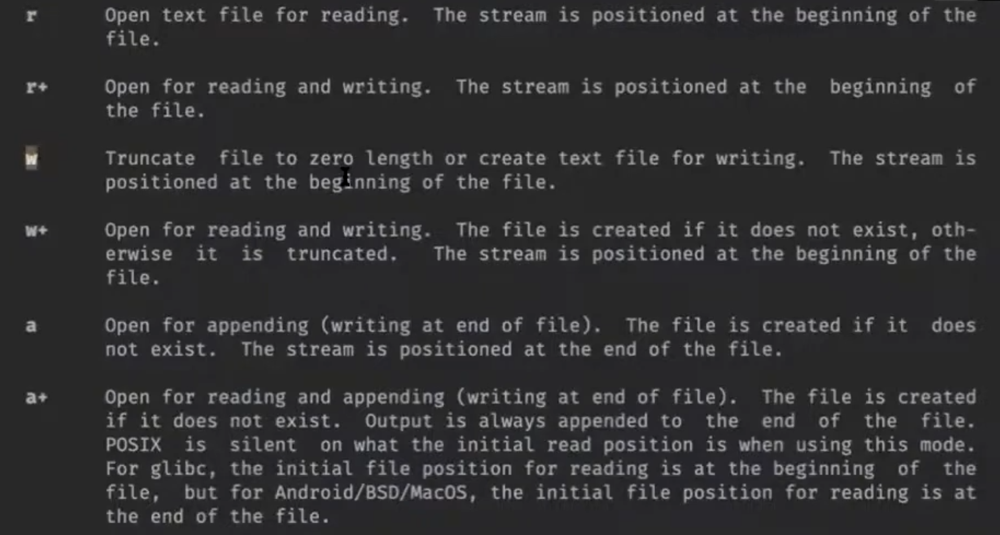
Перенос строки \n в UNIX-подобных ОС - это символ с кодом 10, а на Windows перевод строки - это символы CR и LF (коды 13 и 10). Ради переносимости язык C работает с текстовым файлами так, чтобы \n превращался в тот символ переноса, что нужен на конкретной платформе. Эту опцию можно отключить, добавив в конце mode букву b.
// другие функции библиотеки С для работы с файлами
int fclose(FILE *stream);
int fprintf(FILE *stream, const char *format, ...);
int fseek(FILE *stream, long offset, int whence);
Стандартная библиотека языка С создает потоки ввода/вывода буферизованными: данные накапливаются в буфере, пока он не заполнится. Только тогда данные передаются в системный вызов write.
#include <stdio.h>
#include <unistd.h>
int main() {
FILE *f = fopen("poem. txt", "w");
fprintf(f, "some string");
fprintf(f, " and some other string\n");
pause();
fclose(f);
}
Если во время выполнения pause убить программу, то в файл poem.txt ничего не запишется. Чтобы принудительно очистить буфер, нужно написать fflush(f) перед pause. Если убрать pause и не закрывать файл, то данные все равно окажутся на диске, т.к. когда завершается main, стандартная библиотека языка С вызывает функцию exit, которая закрывает все потоки ввода и вывода, очищая их буферы.
Но нам не всегда хочется при завершении программы закрывать потоки, поэтому можно самим вызвать системный вызов exit:
syscall(SYS_exit, EXIT_SUCCESS);
void _exit(int status); // функция в POSIX. завершает программу, но не сбрасывает буфер
void _Exit(int status); // аналогичная функция в стандартной библиотеке си
Бывают потоки, буферизованные построчно. Например, стандартные потоки ввода/вывода. При встрече \n они сбрасывают буфер. stderr, напротив, не буферизован, благодаря этому сообщения об ошибках появляются сразу.
void setbuf(FILE *stream, char *buf); // для управления буферизацией
void setlinebuf(FILE *stream); // для строчной буферизации
Файловая система
Права доступа
Linux - многопользовательская система, поэтому она организует разделение доступов для пользователей. Если набрать ls -l в терминале, то увидим файлы, а также пользователя, группу и права доступа для каждого файла.
Права доступа записываются в виде трех троек бит. Первая тройка обозначает, что может делать с файлом владелец, вторая тройка - пользователь, входящий в группу, третья тройка - все остальные. Буквы обозначают следующее: r - право читать, w - записывать, x - исполнять как программы.

Режимы доступа можно задавать самим, когда файл создается. Мы делали это в нашей прошлой программе:
int fd = open(name, O_WRONLY | O_CREAT, S_IWUSR | S_IRUSR); // S_IWUSR и S_IRUSR - макросы на восьмеричные числа, которые обозначают биты защиты

Посмотреть всех пользователей можно less /etc/passwd , а группы less /etc/group.
Системный вызов stat
int stat(const char *pathname, struct stat *statbuf); // stat - структура с информацией о файле

Введя в терминал stat filename, можем получить информацию о размере файла, количестве блоков в нем, размере одного блока, времени доступа и др.

Разные сущности файлов
- Обычные файлы - последовательности байт
- Директории, в которых лежат другие файлы и директории
- Символические ссылки
- Жесткие ссылки
- Каналы
- Блочные устройства. Например, диск, куда можно писать блоками
- Символьные устройства. Например, терминал, куда можно читать и писать по одному символу
Символическая ссылка — специальный файл, который содержит путь к другому файлу. Когда программа открывает символическую ссылку, она не показывает содержимое файла, а открывает файл с названием, которое там записано. Если переименуем файл, на который указывает ссылка, то символическая ссылка не будет никуда показывать. ln -s poem.txt poem2.txt создаст символическую ссылку:
Все файлы на диске имеют номера, записанные в Inode. Жесткая ссылка появляется, когда разные имена файлов указывают на один Inode. ln mary.txt poem.txt создаст жесткую ссылку. mary.txt укажет на тот же Inode, что и poem.txt, и любые изменения в одном файле приведут к изменениям в другом. Если удалить один из файлов, то второй файл останется.
На Inode есть reference counter, показывающий, сколько имен ссылаются на это содержимое. Когда reference counter = 0, ОС удаляет файл. Если открыть файл, то его reference counter на это время увеличится.
int stat(const char *file_name, struct stat *buf);
int lstat(const char *pathname, struct stat *statbuf);
int fstat(int fd, struct stat *statbuf); // Для работы с открытым файлом с помощью файлового дескриптора, а не пути
int unlink(const char *pathname); // Удаляет связь с Inode. Если pathname - последнее имя, которое указывало на Inode, то Inode удалится
Утилита stat дает нам информацию о типе файла. Если в stat передать имя символической ссылки, то вместо нее ОС подставит тот файл, на который указывает ссылка. Поэтому, чтобы узнать, является ли файл символической ссылкой, используем вызов lstat, который работает как stat, но передает информацию о самой символьной ссылке, не производя замену.
Директории
Познакомимся с системными вызовами для работы с директориями.
DIR *opendir(const char *name);
DIR *fdopendir(int fd);
struct dirent *readdir(DIR *dirp); // возвращает 0, если дошли до конца директории
В структуре dirent можно посмотреть inode number, имя, тип файла и др.
Напишем программу myls, которая отображает содержимое некоторой директории
#include <dirent.h>
#include <stdio.h>
int main(int argc, char *argv[]) {
const char *dirname = argv[1];
DIR *d = opendir(dirname);
struct dirent *ent;
while ((ent = readdir(d))) {
char buf[4096]; // чтобы записывать длинное имя файла
snprintf(buf, sizeof(buf), "%s/%s", dirname, ent->d_name);
printf("%s\n", buf);
}
}
int link(const char *oldpath, const char *newpath); // делает ссылки
int symlink(const char *target, const char *linkpath); // делает символические ссылки
Вещественные числа
Формат представления числа
Для хранения и обработки вещественных чисел большинство процессоров используют формат IEEE 754. Есть удобный калькулятор.
Рассмотрим, как устроен формат, на примере 32-битных вещественных чисел: 
Биты числа разделены на 3 группы:
- Знаковый бит. Один, старший бит. 0 -- число положительное, 1 -- отрицательное.
- Показатель степени. 8-битное целое число, занимает биты с 23-го по 30-ый. Означает степень двойки, на которую будет домножаться основаная часть числа, записанная далее.
- Дробная часть. 23-битное целое число, содержащее значащие биты вещественного числа.
Обозначим знаковый бит как sign, беззнаковое значение показателя степени как exp,
а беззнаковое значение дробной части как frac.
Значение числа в разных случаях
Итак, как числа получаются с помощью этих компонент? Есть несколько случаев:
- Если 1 <=
exp<= 254, число называется нормализованным. В таком случае оно равно \( -1^{sign} × 2^{exp-127} × 1,frac \). То есть знак и степень двойки домножаются на число, у которого в целой части стоит 1, а дробную часть состаляют 23 бита дробной части :-).
Т.к. мы хотим представлять как большие по модулю числа, так и близкие к нулю, то степень двойки должна принимать как положительные, так и отрицательные значения. Поэтому мы вычитаем из неё 127 (смещение), так степень станет принимать значения [-126; 127] (почему не могут быть -127 и 128, увидим ниже).

- Если exp=0, число называется денормализованным. В этом случае оно равно \( -1^{sign} × 2^{-126} × 0,frac \).

Нормализованные и денормализованные числа отличаются тем, что в первых перед мантиссой ставится целая часть 1, а во вторых -- 0. Это сделано для того, чтобы уметь представлять ноль. Если бы перед мантиссой всегда ставилась 1, то ноль бы не получался.
- Если
exp=255 иfrac=0, число называется бесконечностью и обозначается+infили-infв зависимости от знака.

Бесконечности нужны для обозначения очень больших по модулю чисел, для представления которых не достаточно 8-ми бит показателя степени.
- Если
exp=255 иfrac!=0, число называется нечислом и обозначается "NaN". Знак при этом ни на что не влияет.
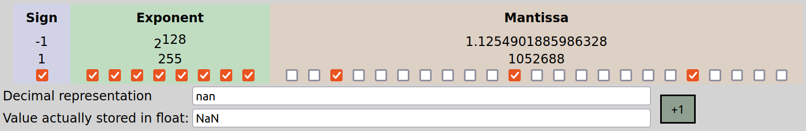
Как видно, различных NaN-ов бывает много. Все они нужны для обозначения неопределённости в результате выполнения арифметических операций, например, 6/0 или sqrt(-3).
Итого, числовая прямая выглядит так: 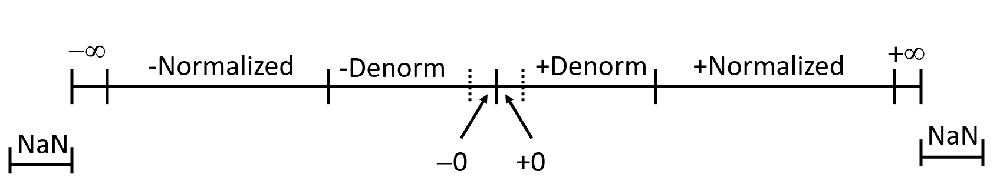
Особенности формата
-
Есть два нуля: +0 и -0. Однако это не приносит проблем при взаимодействии других чисел с ними. Оба нуля являются денормализованными.
-
+0 имеет все нулевые биты, то есть является нулём как 32-битное целое число.
-
Сравнение: наименьшее положительное нормализованное число (\( 2^{-126} * 1,0\)) больше наибольшего денормализованного числа (\( 2^{-126} * 0,111..1\)). Также любое положительное нормализованное число с меньшим
expменьше любого положительного нормализованного числа с большимexp. Таким образом, действительно, все положительные денормализованные числа меньше всех положительных нормализованных, а нормализованные расположены в порядке показателя степени. -
Такой же порядок остаётся, если сравнивать битовые представления вещественных чисел как знаковые целые числа! (Кроме NaN-ов).
-
Вещественные числа становятся более разреженными при увеличении их модуля. Чем число ближе к нулю, тем оно ближе к ближайшему к нему другому представимому числу. А точнее, денормализованные числа идут через одинаковый шаг. Нормализованные числа с
exp=1 идут через удвоенный шаг, сexp=2 -- через учетверённый, и так далее. Иллюстрация распределения чисел: 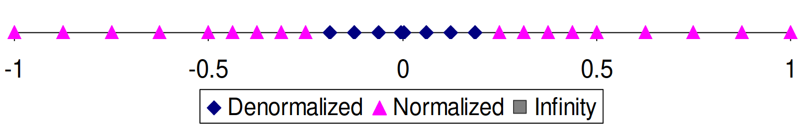
Арифметические операции
- Умножение числа на степень двойки. Достаточно прибавить/вычесть из показателя степени. При этом может получиться бесконечность.
- Умножение двух чисел. Достаточно сложить их показатели степени и перемножить мантиссы.
При этом в мантиссе может также получиться число >= 2, тогда надо его нормализовать и прибавить 1 к показателю степени.
Если мантисса результата не влезает в
23бита, её надо округлить. Если хвост < 1/2 или > 1/2, то округляется вниз или вверх, соответственно. Если хвост в точности 1/2, то округлять всегда в одну сторону плохо, т.к. при большом количестве последовательных операций может накопиться существенная погрешность. Поэтому в этом случае округляется к ближайшему чётному (то есть, если предыдущий бит равен 0, то вниз, если 1 -- вверх). Пример:
|23 бита| |23 бита|
1,01.....1101111 -> 1,01.....11 // хвост < 1/2, округляем вниз
| | | |
1,01.....0110011 -> 1,01.....10 // хвост > 1/2, округляем вверх
| | | |
1,01.....0010000 -> 1,01.....00 // хвост = 1/2, округляем вниз
| | | |
1,01.....0110000 -> 1,01.....10 // хвост = 1/2, округляем вверх
- Деление аналогично.
- Сложение и вычитание. Привести оба числа к одинаковому показателю степени, выполнить операцию, привести к нормализованному или денормализованному виду и округлить по правилам выше, если потребуется.
Свойства арифметических операций
- При корректных арифметических операциях получается либо число, либо бесконечность.
- Сложение и умножение коммутативны
- Ассоциативности нет. Из-за округления в процессе выполнения операций могут получиться разные результаты. Например, \((3.14 + 2^{100}) - 2^{100} = 0\), но \(3.14 + (2^{100} - 2^{100}) = 3.14\). Из-за этого, для сохранения точности выполнять операции стоит в определённом порядке. Например, если хотим сложить массив вещественных чисел в одно число, лучше всего делать это в порядке сортировки чисел по возрастанию модулей.
- У конечных чисел есть обратный элемент по сложению.
- Монотонность: \(a\geq b \implies a+c\geq b + c\), если нет переполнений и NaN-ов.
Вещественные числа в C
Типы и их особенности в C
В C есть типы float, double и long double. На нашей системе они имеют размер 4, 8 и 12 байт соответственно. В 64-битном формате exp занимает 11 бит, а frac -- 52. Некоторые гарантии на арифметику:
- f = -(-f) -- верно всегда.
- (d < 0) => (2d < 0) -- верно всегда, в том числе если получается
-inf. - (d > f) => (-f < -d) -- верно всегда
- d * d >= 0 -- верно всегда
Считая, что int также 32-битный, рассмотрим приведения типов:
- float -> double: преобразутеся точно.
- double -> float: может потеряться точность или стать inf (если был большой по модулю показатель степени).
- int -> double: преобразуется точно, поскольку влезает в мантиссу.
- int -> float: будет округлён, если int большой по модулю и есть маленькие биты (не влезает в мантиссу).
- float/double -> int: дробная часть будет отброшена. Не определено, если целая часть не влезает в int.
Работа с вещественными числами в C
Для наглядности далее будет полезно запускать такой код. Он выводит все части числа в удобном формате:
#include <stdio.h>
#include <math.h>
#define CHECK(exp) printf(#exp " == %d\n", (exp))
int main() {
union {
float f;
unsigned u;
} uf;
while (scanf("%f", &uf.f) == 1) {
printf("f (%%e) = %e\n", uf.f);
printf("f (%%f) = %f\n", uf.f);
printf("f (%%g) = %g\n", uf.f);
printf("f (%%a) = %a\n", uf.f);
printf("u = %x\n", uf.u);
printf("sign = %u\n", uf.u >> 31);
printf("exp = %u\n", (uf.u >> 23) & 0xff);
printf("frac = %x\n", uf.u & 0x7fffff);
CHECK(fpclassify(uf.f));
CHECK(isnan(uf.f));
CHECK(isfinite(uf.f));
CHECK(isinf(uf.f));
CHECK(isnormal(uf.f));
}
}
Спецификаторы printf:
%f,%e,%g-- float/double в 10-ой системе счисления.%a-- float/double в 16-ой СС. Мантисса и показатель степени (c учётом смещения) разделаются символомp. Например,4.375=0x1.18p+2.
Функции для работы с вещественными числами:
int fpclassify(float/double)-- возвращает класс числа, то есть одно из следующих значений:FP_NAN,FP_INFINITE,FP_ZERO,FP_SUBNORMAL,FP_NORMAL.int isnan(float/double)-- является ли число NaN.int isfinite(float/double)-- является ли число не NaN и не бесконечностью.int isinf(float/double)-- 1, если +inf, -1, если -inf.int isnormal(float/double)-- является ли число нормализованным.
Чтобы использовать функции из math.h, необходимо компилировать программу с флагом -lm.
Инструкции для работы с вещественными числами
У процессора есть отдельные регистры для обработки нескольких значений за одну инструкцию и, соответственно, отдельные инструкции для работы с этими регистрами. Есть 128-битные регистры XMM0-XMM31. В них можно поместить, например, 2 double, 4 float, 4 int, 8 short и т.д. Также есть 256-битные регистры YMM0-YMM31, являющиеся расширениями соответствующих XMM (по аналогии с AX->RAX). Аналогично, есть их 512-битные расширения, называемые ZMM0-ZMM31.
Эти регистры исторически добавлялись в следующем порядке: XMM->YMM->ZMM. Инструкции для работы с YMM называются SSE, а для работы с ZMM -- AVX. Мы на курсе будем работать только с SSE.
SSE инструкции:
MOVAPD xmm1/m128 xmm2-- положить два double, записанные в xmm1 (или в памяти) в xmm2. Если переклыдавем из памяти, она должна быть выровнена на 16 байт.MOVUPD xmm1/m128 xmm2-- то же самое, только нет требования к выравниванию. Работает дольше. К счастью, и gcc при входе в функцию стек выравнивает на 16 байт, и *alloc выделяет память, выровненную на 16 байт, поэтому всегда можем использоватьMOVAPD.ADDPD xmm1/m128 xmm2-- прибавить два double из xmm1 или из памяти к xmm2 поэлементно.MOVSS e*x/m32 xmm2-- загружает в младшие 32 бита xmm2.HADDPD xmm1/m128 xmm2-- выполняет "горизонтальное" сложение в двух числах отдельно и записывает в результат эти результаты подряд:
Все регистры XMM caller-saved (не надо сохранять внутри функции).
Как gcc компилирует работу с вещественными числами.
Посмотрим, как следующая программа выглядит при компиляции с разными оптимизациями: 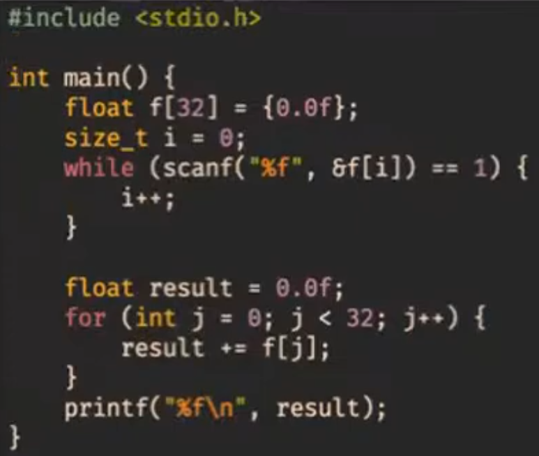
- Компилируем эту программу gcc без флагов оптимизации и в 32-битном режиме. Поскольку на 32-битной архитектуре мы не можем гарантировать, что процессор поддерживает SSE, то компилятор генерирует инструкции из устаревшего набора x87 (для сопроцессора). Мы с таким работать не хотим, поэтому идём дальше.
- Соберём без
-m32(то есть для 64-битной архитектуры). Получились SSE-инструкции, но пока что работающие с float-ми по-одиночке. 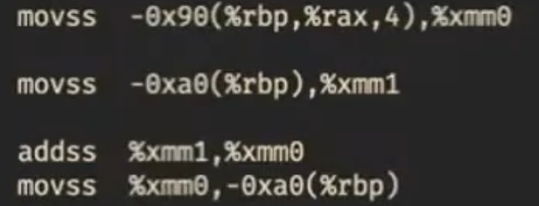 - Соберём с O3 и
-mavx -ftree-vertorize. Так мы скажем компилятору, что доступны инструкции AVX, и чтобы он векторизовал операции. Но он почему-то всё равно не векторизует :(
Чтобы печатать float-ы через printf на 32-битной архитектуре, используются инструкции x87. А на 64-битной параметры типа float и double в printf передаются через регистры xmm. Подробнее не будем изучать.
Алгоритм Кэхэна
Чтобы сложить много вещественных чисел более точно, можно использовать такой алгоритм, учитывающий ошибку округления:
function KahanSum(input)
var sum = 0.0 // Prepare the accumulator.
var c = 0.0 // A running compensation for lost low-order bits.
for i = 1 to input.length do // The array input has elements indexed input[1] to input[input.length].
var y = input[i] - c // c is zero the first time around.
var t = sum + y // Alas, sum is big, y small, so low-order digits of y are lost.
c = (t - sum) - y // (t - sum) cancels the high-order part of y; subtracting y recovers negative (low part of y)
sum = t // Algebraically, c should always be zero. Beware overly-aggressive optimizing compilers!
next i // Next time around, the lost low part will be added to y in a fresh attempt.
return sum
Идея в том, что отдельно считаются неточная сумма больших по модулю чисел (переменная sum) и компенсация для накопленной ошибки округления (переменная c).
Вещественные числа на x86
FPU (x87)
8 80-битных регистров (extended precision)
FLD — загрузить число из памяти в стек FPU
FST/FSTP — сохранить вершину стека FPU в память
Регистры SSE
SSE (Streaming SIMD Extension) - набор инструкций, позволяющий выполнять несколько одинаковых операций одновременно. Набор инструкций SSE продолжает расширяться.
Для хранения аргументов операций SSE используются регистры xmm. 32-битная система команд
x86 позволяет использовать 8 регистров %xmm0 ... %xmm7. 64-битная система команд x64 позволяет использовать
16 регистров %xmm0 ... %xmm15. Регистры xmm являются scratch-регистрами, то есть при вызове подпрограмм
сохранение значений не гарантируется (как с регистрами %eax, %ecx, %edx).
Регистры xmm имеют размер 128 бит и могут хранить 2 64-битных, 4 32-битных целых или вещественных значения, а также 8 16-битных или 16 8-битных целых значения. Интерпретация битового содержимого регистров xmm зависит от выполняемой инструкции.
В стандартном соглашении о вызовах x64 первые 8 параметров вещественных типов float или double передаются
на регистрах %xmm0 ... %xmm7, последующие аргументы передаются в стеке. Результат вещественного типа возвращается
в регистре %xmm0.
В стандартном соглашении о вызовах x32 аргументы вещественных типов передаются на стеке. Специального выравнивания для double не требуется. Результат вещественного типа возвращается в регистре FPU %st(0). Даже если результат в %st(0) не используется вызывающей программой, он должен быть удален из стека FPU. Если в коде x86 для вычислений используется SSE, а подпрограмма должна вернуть значение вещественного типа, результат из SSE должен быть скопирован на верхушку стека FPU.
Например, для копирования значения типа double на FPU может использоваться следующая последовательность операций:
sub $8, %esp // резервируем память
movsd %xmm0, (%esp) // копируем значение double из %xmm0 в стек
fldl (%esp) // загружаем из стека на %st(0)
add $8, %esp // очищаем стек
Скалярные вычисления на регистрах SSE
Регистры SSE можно использовать для обычных вычислений с плавающей точкой. Такие инструкции по терминологии Intel называются скалярными. В этом случае в регистрах xmm будет использоваться только младшая часть: младшие 32 или 64 бита.
Для пересылки скалярных значений могут использоваться следующие инструкции:
movsd SRC, DST // пересылка между регистрами xmm и памятью значения double
movss SRC, DST // пересылка значения типа float
Эти инструкции позволяют пересылать значение из регистра xmm в другой регистр xmm, а также между регистрами xmm и памятью. При обращении к памяти на x86 достаточно, чтобы значение double было выровнено по адресу, кратному 4.
Со скалярными значениями поддерживаются следующие операции:
addsd SRC, DST // DST += SRC, double
addss SRC, DST // DST += SRC, float
subsd SRC, DST // DST -= SRC, double
subss SRC, DST // DST -= SRC, float
mulsd SRC, DST // DST *= SRC, double
mulss SRC, DST // DST *= SRC, float
divsd SRC, DST // DST /= SRC, double
divss SRC, DST // DST /= SRC, float
sqrtsd SRC, DST // DST = sqrt(SRC), double
sqrtss SRC, DST // DST = sqrt(SRC), float
maxsd SRC, DST // DST = max(SRC, DST), double
maxss SRC, DST // DST = max(SRC, DST), float
minsd SRC, DST // DST = min(SRC, DST), double
minss SRC, DST // DST = min(SRC, DST), float
Преобразование double->int выполняется инструкцией
cvtsd2si SRC, DST // DST = (int32_t) SRC
Здесь SRC - регистр xmm или память, DST - 32-битный регистр общего назначения. Инструкция выполняет преобразование вещественног числа типа double в 32-битное знаковое целое число.
Преобразование double->float выполняется инструкцией:
cvtsd2ss SRC, DST // DST = (float) SRC
Преобразование int->double выполняется инструкцией:
cvtsi2sd SRC, DST // DST должен быть регистр xmm, SRC либо GPR, либо память
Преобразование float->double:
cvtss2sd SRC, DST // DST = (double) SRC
Для преобразований float->int и int->float предназначены инструкции cvtss2si и cvtsi2ss.
Сравнение двух скалярных значений типа float или double выполняется инструкцией:
comisd SRC, DST // DST - SRC, double
comiss SRC, DST // DST - SRC, float
В результате выполнения операции сравнения устанавливаются флаги PF, CF, ZF. Флаг PF устанавливается, если результат - неупорядочен. Флаг ZF устанавливается, если значения равны. Флаг CF устанавливается, если DST < SRC. Для условного перехода после сравнения можно использовать условные переходы для беззнаковых чисел. Например, ja будет выполнять условный переход, если DST > SRC.
Векторные вычисления на регистрах SSE
Векторные вычисления в терминологии Intel описываются как вычисления с упакованными (packed) значениями.
Для пересылки 128-битных значений между памятью и регистрами xmm и между двумя регистрами xmm используется инструкция
movapd SRC, DST // DST = SRC
если один из аргументов - память, адрес должен быть выровнен по адресу, кратному 16. Для пересылки по невыровненным адресам можно использовать инструкцию movupd.
С векторными значениями поддерживаются следующие операции, которые выполняются одновременно со всеми значениями в регистрах (2 для double или 4 для float):
addpd SRC, DST // DST += SRC, double
addps SRC, DST // DST += SRC, float
subpd SRC, DST // DST -= SRC, double
subps SRC, DST // DST -= SRC, float
mulpd SRC, DST // DST *= SRC, double
mulps SRC, DST // DST *= SRC, float
divpd SRC, DST // DST /= SRC, double
divps SRC, DST // DST /= SRC, float
sqrtpd SRC, DST // DST = sqrt(SRC), double
sqrtps SRC, DST // DST = sqrt(SRC), float
maxpd SRC, DST // DST = max(SRC, DST), double
maxps SRC, DST // DST = max(SRC, DST), float
minpd SRC, DST // DST = min(SRC, DST), double
minps SRC, DST // DST = min(SRC, DST), float
Горизонтальные операции
Обычная операция над упакованными SSE-регистрами может рассматриваться как "вертикальная". Например,
рассмотрим инструкцию ADDPS A, B. Эта инструкция складывает четыре float-значения в операнде A
с соответствующими 4 значениями в операнде B и кладет результат в операнд B. Если A и B рассматривать
как массивы из 4 значений типа float, то операция может быть описана следующим образом:
float A[4];
float B[4];
B[0] = A[0] + B[0]
B[1] = A[1] + B[1]
B[2] = A[2] + B[2]
B[3] = A[3] + B[3]
В противовес "вертикальной" операции "горизонтальная" операция вовлекает соседние значение в одном регистре.
Например, инструкция HADDPS A, B выполняется следующим образом:
float A[4];
float B[4];
B[0] = B[0] + B[1];
B[1] = B[2] + B[3];
B[2] = A[0] + A[1];
B[3] = A[2] + A[3];
AVX
Обработка ошибок
Оптимизация
Сети и сокеты
Для обмена информацией в компьютерных сетях придуманы стандартные протоколы (договорённости о том, кто когда что кому отправляет и что это значит).
ISO/OSI
Protocol data unit (PDU)
- Physical
- Data Link
- Network
- Transport
- Session
- Presentation
- Application
TCP/IP
Стек протоколов Интернета, или стек TCP/IP, выглядит примерно так:
| Уровень | Протоколы этого уровня |
|---|---|
| Прикладной (application) | HTTP, SSH, DNS, ... |
| Транспортный (transport) | TCP, UDP, SCTP, QUIC, ... |
| Межсетевой (inter-net) | IPv4, IPv6 |
| Канальный (link) | Ethernet, Wi-Fi (IEEE 802.11), ... |
Обычно мы используем набор протоколов разных уровней, чтобы решить свою прикладную задачу. Например, при загрузке веб-страницы http://wiki.cs.hse.ru/ будут как минимум использоваться HTTP, TCP, IPv4 и какие-то канальные протоколы.
Фрагмент данных с верхнего уровня стека заворачивается в “конверт” нижнего уровня (картинка из википедии на примере UDP):

Данные доходят до адресата через цепочку промежуточных устройств, каждое из которых распаковывает и просматривает столько конвертов, сколько ему нужно и сколько оно умеет:

Например, пока пакет не дошёл до хоста (компьютера) – адресата, никто* не смотрит на заголовки транспортного уровня. Благодаря этому поверх имеющейся инфраструктуры межсетевого уровня можно реализовывать новые способы обмена информацией.
Как правило, протоколы прикладного уровня реализованы в userspace (в программах и библиотеках), транспортного и межсетевого — в ядре ОС, а канальный уровень делят между собой ОС и аппаратура.
На межсетевом уровне появляется глобальная адресация: у каждого хоста в сети есть уникальный идентификатор — адрес. Адрес IPv4 — 4 байта, их записывают в десятичной системе: 92.242.58.220. Адрес IPv6 — 16 байт, их записывают в 16-ричной системе двухбайтовыми последовательностями через двоеточие: 2a02:6b8::2:242 (там, где два двоеточия подряд, подразумевается последовательность нулевых байт).
Протокол TCP представляет абстракцию “трубы с данными”, похожей на канал в Unix: гарантируется надёжная доставка данных в изначальной последовательности, не сохраняются границы между отдельными записями в канал. Протокол UDP представляет абстракцию “голубиной почты”: можно отправлять датаграммы — отдельные фрагменты данных известного размера, которые могут дойти до получателя в произвольном порядке, дойти несколько раз или не дойти вовсе.
TCP и UDP используют адрес межсетевого уровня и добавляют ещё 16 бит, которые называются «порт». Есть well-known порты, которые обычно используются для разных надобностей (см. /etc/services): например, сервер HTTP обычно использует порт 80.
Ну и теперь собственно сокеты
POSIX даёт нам слой абстракции поверх протоколов транспортного уровня и ниже. Абстракция называется sockets (гнёзда). В userspace сокет виден как файловый дескриптор.
Создаём сокет (man 2 socket):
#include <sys/types.h>
#include <sys/socket.h>
int socket(int domain, int type, int protocol);
Параметр domain выбирает используемый протокол межсетевого уровня (ну примерно). Нам будут интересны три варианта:
Name Purpose Man page
AF_INET IPv4 Internet protocols ip(7)
AF_INET6 IPv6 Internet protocols ipv6(7)
AF_UNIX Local communication unix(7)
Сокеты бывают как минимум двух типов (параметр type): потоковые и датаграммные (ср. TCP и UDP). Для первых хорошо подходят стандартные операции read/write, для вторых не очень.
SOCK_STREAM Provides sequenced, reliable, two-way, connection-based
byte streams.
SOCK_DGRAM Supports datagrams (connectionless, unreliable messages
of a fixed maximum length).
protocol мы будем обычно указывать равным нулю, чтобы ОС выбрала за нас стандартный протокол нужного типа (TCP для AF_INET/SOCK_STREAM, UDP для AF_INET/SOCK_DGRAM), но можно и явно указать IPPROTO_TCP или IPPROTO_UDP.
Где бы взять адрес
Допустим, мы хотим соединиться с хостом ya.ru по протоколу HTTPS. Мы пока не знаем, есть ли у хоста адрес IPv6 или IPv4 и каковы эти адреса. Нам нужно обратиться к серверу DNS (Domain Name System) и спросить у него. Ещё неплохо бы посмотреть в /etc/services, какого типа сокет нам понадобится (stream или datagram) и какой использовать порт.
Для этого нам дана функция getaddrinfo:
int getaddrinfo(const char *node, const char *service,
const struct addrinfo *hints,
struct addrinfo **res);
void freeaddrinfo(struct addrinfo *res);
const char *gai_strerror(int errcode);
struct addrinfo {
int ai_flags;
int ai_family;
int ai_socktype;
int ai_protocol;
socklen_t ai_addrlen;
struct sockaddr *ai_addr;
char *ai_canonname;
struct addrinfo *ai_next;
};
Попробуем распечатать адреса, которые она нам возвращает. Смотреть на это без боли невозможно:
#include <sys/types.h>
#include <sys/socket.h>
#include <netdb.h>
#include <stdio.h>
#include <arpa/inet.h>
int main(int argc, char* argv[]) {
if (argc != 3) {
fprintf(stderr, "Usage: %s NODE SERVICE\n", argv[0]);
return 1;
}
struct addrinfo *res = NULL;
int gai_err;
if (gai_err = getaddrinfo(argv[1], argv[2], NULL, &res)) {
fprintf(stderr, "gai error: %s\n", gai_strerror(gai_err));
return 2;
}
for (struct addrinfo *ai = res; ai; ai = ai->ai_next) {
char buf[1024];
printf("ai_flags=%d, ai_family=%d, ai_socktype=%d\n",
ai->ai_flags, ai->ai_family, ai->ai_socktype);
struct sockaddr_in *inet;
struct sockaddr_in6 *inet6;
switch (ai->ai_family) {
case AF_INET:
inet = (struct sockaddr_in *)ai->ai_addr;
printf("\taddress: %s, port: %hu\n",
inet_ntop(ai->ai_family, &inet->sin_addr,
buf, sizeof(buf)),
htons(inet->sin_port));
break;
case AF_INET6:
inet6 = (struct sockaddr_in6 *)ai->ai_addr;
printf("\taddress: %s, port: %hu\n",
inet_ntop(ai->ai_family, &inet6->sin6_addr,
buf, sizeof(buf)),
htons(inet6->sin6_port));
break;
default:
printf("\tunknown address family\n");
}
}
freeaddrinfo(res);
}
Так или иначе, теперь у нас есть адреса, по которым найдём сервиса́ и можно создавать сокеты подходящих типов и пробовать устанавливать соединения.
Потоковые сокеты
Есть две стороны: клиент и сервер.
Клиент:
#include <sys/types.h>
#include <sys/socket.h>
#include <netdb.h>
#include <stdio.h>
#include <unistd.h>
#include <string.h>
int create_connection(char* node, char* service) {
struct addrinfo *res = NULL;
int gai_err;
struct addrinfo hint = {
.ai_family = AF_UNSPEC, // можно и AF_INET, и AF_INET6
.ai_socktype = SOCK_STREAM, // но мы хотим поток (соединение)
};
if (gai_err = getaddrinfo(node, service, &hint, &res)) {
fprintf(stderr, "gai error: %s\n", gai_strerror(gai_err));
return -1;
}
int sock = -1;
for (struct addrinfo *ai = res; ai; ai = ai->ai_next) {
sock = socket(ai->ai_family, ai->ai_socktype, 0);
if (sock < 0) {
perror("socket");
continue;
}
if (connect(sock, ai->ai_addr, ai->ai_addrlen) < 0) {
perror("connect");
close(sock);
sock = -1;
continue;
}
break;
}
freeaddrinfo(res);
return sock;
}
int main(int argc, char* argv[]) {
if (argc != 3) {
fprintf(stderr, "Usage: %s NODE SERVICE\n", argv[0]);
return 1;
}
int sock = create_connection(argv[1], argv[2]);
if (sock < 0) {
return 1;
}
char* msg = "hello world\n";
write(sock, msg, strlen(msg));
close(sock);
}
Сервер:
#include <sys/types.h>
#include <sys/socket.h>
#include <netdb.h>
#include <stdio.h>
#include <unistd.h>
#include <string.h>
int create_listener(char* service) {
struct addrinfo *res = NULL;
int gai_err;
struct addrinfo hint = {
.ai_family = AF_UNSPEC,
.ai_socktype = SOCK_STREAM,
.ai_flags = AI_PASSIVE,
};
if (gai_err = getaddrinfo(NULL, service, &hint, &res)) {
fprintf(stderr, "gai error: %s\n", gai_strerror(gai_err));
return -1;
}
int sock = -1;
for (struct addrinfo *ai = res; ai; ai = ai->ai_next) {
sock = socket(ai->ai_family, ai->ai_socktype, 0);
if (sock < 0) {
perror("socket");
continue;
}
if (bind(sock, ai->ai_addr, ai->ai_addrlen) < 0) {
perror("bind");
close(sock);
sock = -1;
continue;
}
if (listen(sock, SOMAXCONN) < 0) {
perror("listen");
close(sock);
sock = -1;
continue;
}
break;
}
freeaddrinfo(res);
return sock;
}
int main(int argc, char* argv[]) {
if (argc != 2) {
fprintf(stderr, "Usage: %s SERVICE\n", argv[0]);
return 1;
}
int sock = create_listener(argv[1]);
if (sock < 0) {
return 1;
}
int connection = accept(sock, NULL, NULL);
char* msg = "hello world\n";
write(connection, msg, strlen(msg));
close(sock);
}
Датаграммные сокеты
ssize_t sendto(int sockfd, const void *buf, size_t len, int flags,
const struct sockaddr *dest_addr, socklen_t addrlen);
ssize_t recvfrom(int sockfd, void *buf, size_t len, int flags,
struct sockaddr *src_addr, socklen_t *addrlen);
Процессы
Важные команды
ps
$ ps [OPTIONS] # информация о запущенных процессах
Пример использования:
$ ps aux
- Опция
aуказывает ps вывести на дисплей процессы всех пользователей, за исключением тех процессов, которые не связаны с терминалом и процессами группы лидеров. - Опция
xв ps перечисляет процессы без управляющего терминала. В основном это процессы, которые запускаются во время загрузки и работают в фоновом режиме. - Опция
eуказывает ps отобразить все процессы. - Опция
f— полноформатный список, который содержит подробную информацию о процессах.
proc
/proc — это виртуальная файловая система. Ее основная задача — получение состояния системы и частично выполнение управляющих действий.
$ ls /proc # вывод в консоль директории виртуальных каталогов и подкаталогов
Что такое процесс
- Процесс - это запись во внутренних структурах ядра, в которую ядро записывает ресурсы и планирует выполнение. Программа, которую мы написали и запустили - это процесс.
- У процесса есть своя виртуальная память и таблица файловых дескрипторов.
Параметры процеса
USER- от имени какого пользователя выполняется процесс. Стандартный пример:root.PID- идентификатор процесса, у процессов выполняющихся в одно время он разный.STAT- статус процесса. Примеры статусов:S- процесс в состоянии ожидания,R- выполняющийся процесс,D- процесс ожидает ввода/вывода.
Нужные системные вызовы
-
Системный вызов
sleep- процесс будет спать в течение заданного количества секунд. -
Системный вызов
pause- заставляет вызывающий процесс спать до тех пор, пока не поступит сигнал, который либо завершит процесс, либо вызовет функцию, ловящую данный сигнал. -
Системный вызов
waitприостанавливает выполнение вызывающего процесса пока не завершится один из его дочерних процессов.
Как породить новый процесс?
- Системный вызов
fork- полностью копирует процесс, который его вызвал. Важно понимать, что хоть у них пространства виртуальной памяти изначально идентичные (сразу после копирования), они всё же отдельные. То есть изменение переменной в одном процессе не поменяет её в другой.
Как это использовать
#include <unistd.h>
#include <stdio.h>
int main () {
fork();
printf("hello world from %d\n", getpid()); // id процесса - это целое число
}
Данный код приведёт к тому, что pid выведется дважды, и это будут два разных числа. Важно понимать, что зацикливания не произойдёт, так как новый процесс начнёт выполняться с момента строго после fork(). Более наглядно это будет, если послетреть на output кода ниже.
#include <unistd.h>
#include <stdio.h>
int main () {
printf("parent process\n");
fork();
printf("hello world from %d\n", getpid());
}
OUTPUT:
parent process
hello world from 2991610
hello world from 2991611
Так как виртуальная память копируется, то любые изменения переменных в склонированном процессе будут локальными, однако иметь одинаковые адреса. Наглядно это можно увидеть из примера кода ниже.
#include <unistd.h>
#include <stdio.h>
int x = 0;
int main () {
fork();
++x;
sleep(1); // для надёжности усыпим процесс, чтобы x успели поменять оба
printf("x = %d, &x = %d\n", x, &x);
}
OUTPUT:
x = 1, &x = 0x55f9 // разумеется реальный адрес будет длиннее,
x = 1, &x = 0x55f9 // но для наглядности взят короткий
Как же тогда в самом процессе понять дочерний он или родительский? Посмотреть на возвращаемое значение функции fork. В родительский процесс она возвращает PID дочернего, а в дочерний возвращает 0. В случае ошибки возвращаемое значение равняется -1.
Из этого также следует, что PID начинаются с 1.
Задан ли порядок выполнения родительского и дочернего процессов? Нет. Они могут выполняться в любом порядке и никак не синхронизированы.
Зачем нам вообще нужно, чтобы в системе было много процессов? Например, чтобы разные пользователи могли запускать программы, или один пользователь мог одновременно запустить несколько программ.
Что будет, если родительский процесс убить до того, как дочерний завершится? Для этого давайте посмотрим как будет выглядеть консоль целиком после выполнения кода ниже.
#include <unistd.h>
#include <stdio.h>
int main () {
pid_t id = fork();
if (id == 0) {
printf("child process\n");
sleep(2);
} else {
print("parent process\n");
}
printf("Hello there\n");
}

Что нужно знать про системный вызов wait? Если дочерний процесс уже завершился, а родительский ещё нет, то дочерний переходит с состояние zombie/defunct process, так как понимает, что родительский процесс всё ещё может захотеть вызвать wait.
Системный вызов для файлов
Что происходит при вызове open?
- Создаётся file description.
- В таблицу c file descriptors передаётся ссылка на данный file description.
- Индекс данной ссылки возвращается как результат системного вызова.
У процесса таблица file descriptors представляет из себя массив из указателей на file descriptions.
Сами file descriptions никак не привязаны к процессу.
Что происходит с файловыми структурами при системных вызовах?
fork:- struct file - увеличения счётчика указателей
- таблица file descriptors никак не изменится
close:- уменьшение счётчика указателей
- file description уничтожается, если на файл больше никто не указывает
lseek:- меняется позиция в file description
Важный факт: для разных процессов, читающих один и тот же файл, позиция считывания общая. То есть, когда читает один из процессов, указатель откуда чтение продолжится сдвигается для всех.
Атомарность
В чём состоит вопрос? Не получится ли так, что мы из двух процессов выполняем чтение или запись с одним и тем же файлом, и позиции чтения и записи будут как-то несогласованы (помним, что указатель на текущую позицию в файле общий для процессов)?
Пример не атомарности

Решение: добавить флаг O_EXCL, таким образом файл не будет создан заново.
Пример для логирования
Использование флага O_APPEND будет выполнять перемещение указателя на место записи в файле в самый конец и саму запись в данную позицию (то есть в конец файла) атомарно.
Ужасающий пример отсутствия атомарности
POSIX (стандарт) - не даёт гарантий атомарности на запись или чтение из файла. Например результатом write("123") и write("abc") из разных процессов может быть "1a2b3c".
Но можно расслабиться, Linux запишет всё без перемешивания.
shebang
При добавлении в скрипт записи вида #!<address>, запускается не сам скрипт, а интерпретатор <address>.
Пример:
#!/usr/bin/python3
print("hello")
bash не знает, что такое print, зато /usr/bin/python3 знает.
Семейство exec
Что происходит при вызове
- Текущий процесс остаётся без изменений
- Исчезает только виртуальная память и появляется новое пространство виртуальной памяти
- В данную виртуальную память загружается бинарный файл и начинается его исполнение
Пример для понимания
#include <unistd.h>
#include <stdio.h>
int main() {
execv(...);
perror("Error\n");
}
Сообщение об ошибке не выведется, так как данный процесс начнёт исполнять уже другой бинарный файл.
Так как же тогда использовать
#include <unistd.h>
#include <stdio.h>
int main() {
pid_t child = fork();
if (child == 0) { // если мы в дочернем процессе
execv(...);
}
int status;
wait(&status);
printf("Some code here"\n);
}
Здесь мы имеем, что дочерний процесс отдаст свои ресурсы под выполнение бинарного файла, а родительский продолжит выполнять свой код дальше. wait добавили, чтобы родительский процесс сначала дождался выполнения дочернего процесса.
dup2
Системный вызов делает так, чтобы определенный файловый дескриптор (передаётся по номеру), смотрел туда же, куда и другой файловый дескприптор (тоже передаётся по номеру).
Пример использования:

shared_mem
Пока будем организовывать себе разделяемую память по старинке: mmap(MAP_SHARED); fork().
Неожиданности на уровне ассемблера
Мы привыкли думать про компьютер как про машину фон Неймана: есть отдельные инструкции, которые выполняются в определённой последовательности, и результаты выполнения каждой “видны” всем последующим:
mov $3, x
mov x, %eax // очевидно, теперь eax == 3
Так мы всегда писали программы, так видели их в отладчике.
Можно было бы ожидать, что когда мы пишем многопоточную программу, то из инструкций отдельных потоков (перемежающихся в каком-то порядке) можно составить эквивалентную однопоточную:
CPU 1 CPU 2 Однопоточное исполнение
Sequential consistency
mov $3, x ----------------------------> mov $3, x
mov $4, y -------> mov $4, y
mov y, %eax --------------------------> mov y, %eax
mov x, %ecx ------> mov x, %ecx
Но оказывается, что на реальном процессоре может быть вот так:
// Thread 1 // Thread 2
// start with x == 0, y == 0
mov $1, x mov $2, y
mov y, %eax mov x, %ecx
// %eax == 0, %ecx == 0
Как ни перемежай эти инструкции, в однопоточной программе такой результат невозможен.
Дело в том, что мы для скорости добавляем в процессоры кэши:

Нашу любимую архитектуру x86 можно представить так (Total Store Order):

Возможно, один процессор записал в свой write buffer x=1 , другой y=2, но пока не записали это в общую память, а прочитали из общей памяти старые значения.
Тем не менее на x86 не может быть такого:
// start with x=0, y=0
// Thread 1 // Thread 2
x = 1 r1 = y
y = 1 r2 = x
// **r1 = 1, r2 = 0**
// более поздняя запись произошла,
// а более ранняя нет
Но такое может быть на архитектуре ARM:

Чтобы можно было писать программы, процессор гарантирует некоторую модель памяти: что может происходить, а что нет.
Названия: sequential consistency, TSO, strong/relaxed memory model.
Статья про модели памяти: https://research.swtch.com/hwmm
Документация Intel (см. раздел 8.2.3 Examples Illustrating the Memory-Ordering Principles):
https://www.intel.com/content/www/us/en/developer/articles/technical/intel-sdm.html (только через VPN)
RMW — read, modify, write
Счётчик:
lock incl x // из разных потоков
// -> load x, %r...; inc %r...; store %r..., x
mfence // full barrier
lfence // load fence
sfence // store fence
Неожиданности на уровне ЯВУ
(То есть Языка Высокого Уровня.)
Компилятор ничего не знает про разные потоки исполнения.
// Thread 1 // Thread 2
x = 1; while(done == 0) { /* loop */ }
done = 1; print(x);
Цикл может 1) выполняться бесконечно, 2) не выполняться совсем, 3) выполняться как ожидается.
Можно поиграться с разными вариантами:
Напечатано может быть 0, 1 или что-нибудь ещё.
Atomics
C: _Atomic.
Atomic vs volatile: https://godbolt.org/z/zT55bhzs8
Более уместно было бы название synchronizing atomics.
Как атомарные операции компилируются на разных платформах:
https://www.cl.cam.ac.uk/~pes20/cpp/cpp0xmappings.html
Thread 1 Thread 2
W(x, 1) // happens before SW(done)
SW(done, 1) --- SR(done) // happens before R(x)
R(x) // happens after SR(m)
// W(x, 1) → SW → SR → R(x)
↓ ↓
program order program order
mov $1, x mov done, %eax // 1
mov $1, done mov x, %ecx
Линус про _Atomic: Re: Memory corruption due to word sharing (”it's not the "state" that is accessed concurrently. It's the code.”).
parallel-2
RMW
x86: префикс lock:
lock add/sub/xor/...
xchg %r32, m32 // exchange; "lock" implied
lock xadd %r32, m32 // { tmp = m32; m32 += r32; r32 = tmp; }
lock cmpxchg %r32, m32 // CAS — compare and swap
// Compare %eax with m32.
// If equal, set ZF and load r32 into m32.
// Else, clear ZF and load m32 into %eax.
C11: stdatomic.h
#include <stdatomic.h>
_Bool atomic_compare_exchange_strong(volatile A *object, C *expected, C desired);
_Bool atomic_compare_exchange_weak(volatile A *object, C *expected, C desired);
/*
Atomically, compares the value pointed to by object for equality
with that in expected, and if true, replaces the value pointed to by object with
desired, and if false, updates the value in expected with the value pointed to by
object.
Returns the result of the comparison.
*/
if (weak && !x86) {
sometimes {
return false; // weak-версия иногда фейлится просто так
// load-linked + store-conditional на ARM
}
}
atomically {
bool equal = (*object == *expected);
*expected = *object;
if (equal) {
*object = desired;
}
return equal;
}
C++: cppreference.
Критические секции (мьютексы)
Бывают вещи, которые нужно сделать атомарно, а готовой atomic/RMW операции для этого нет:
struct list {
int val;
struct list* next;
}
void push(struct list** head, int value) {
struct list *node = calloc(1, sizeof(*node));
node->val = value;
spin_lock(lock);
{
node->next = *head;
*head = node;
}
spin_unlock(lock);
}
/*
Thread 0 Thread 1
*head = node;
lock = 0; ----> lock == 0
node->next = *head;
*/
Mutex — от MUTual EXclusion.
Перед тем, как построить мьютекс, построим спинлок.
Spinlock
int spinlock;
// 0 — unlocked
// 1 — locked
Будем пользоваться примитивом Compare-And-Swap:
cmpxchg(var, expected, desired) {
atomically {
old = var;
if (var == expected) {
var = desired;
}
return old;
}
}
Спинлок:
typedef _Atomic int spinlock;
// Неэффективный, но работающий спинлок
void spin_lock(spinlock *s) {
while (cmpxchg(*s, 0, 1) != 0) { asm volatile ("pause"); }
}
void spin_unlock(spinlock *s) {
*s = 0;
}
Спинлок отлично работает, когда защищает пару инструкций, но бесконечно тратит ресурсы, если нужно подождать подольше. На этот случай нам нужен способ остановиться и подождать, а с этим нам может помочь только ядро.
Фьютексы
Примитив синхронизации в ядре Linux (википедия):
FUTEX_WAIT(addr, val)
If the value stored at the address *addr* is *val*, puts the current thread to sleep.
FUTEX_WAKE(addr, num)
Wakes up *num* threads waiting on the address *addr*.
(На любой платформе addr — адрес 32-битного значения.)
(Fast Userspace muTual EXclusion.)
Теперь можно сделать себе (простенький, не production ready) мьютекс:
struct mutex {
_Atomic uint32_t lock;
_Atomic uint32_t waiters;
};
void mutex_lock(struct mutex *m) {
while (cmpxchg(m->lock, 0, 1) != 0) {
m->waiters++;
futex_wait(&m->lock, 1);
m->waiters--;
}
}
void mutex_unlock(struct mutex *m) {
m->lock = 0;
if (m->waiters > 0) {
futex_wake(&m->lock, 1);
}
}
struct object {
struct mutex m;
int refcount;
}
Настоящий мьютекс занимает одно 32-битное значение и немножко ждёт как спинлок в надежде, что не придётся делать futex_wait, но в целом устроен так же.
Сравнить реализации: мьютекс из musl, статья Дреппера про фьютексы.
Contention («конкуренция»?). Оптимизируем uncontended case.
Ну, теперь можно и треды создавать
Threads (нити, треды, легковесные процессы) — потоки исполнения в общем адресном пространстве.
Как сделать себе такую штуку в Linux: https://man7.org/linux/man-pages/man2/clone.2.html (читать про CLONE_THREAD).
Thread safety стандартной библиотеки языка Си: https://man7.org/linux/man-pages/man7/attributes.7.html (пример про printf).